AI Demystified
Richard Flamsholt
August 2026
We all use AI. But it's still a bit mysterious.
"How does it know that...?" or "Why doesn't it know that...?"
Words like tokens, context, MCP servers, thinking, and agent files get tossed around daily. But do you really know what they are?
This presentation will explain and demystify AI. It's for everybody who uses AI, not just developers, because becoming more familiar with the terms and fundamental principles will make you better equipped overall to work with AI.
There's a lot to cover so be ready to pay attention. I'll do my part by covering only what's most useful, interesting, and surprising about the AI you use daily. Also, I've included links to videos and explanations that I've found really useful myself.
Links:
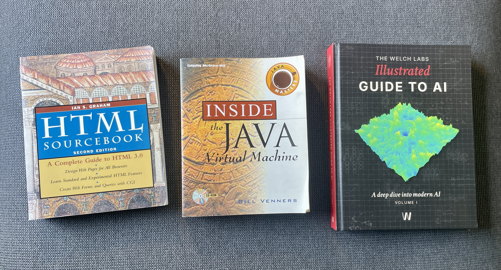
Over time, some landmark tech has particularly triggered my brain.
When HTML came out I was like, man, I just want to know all about it.
Same with Java and .NET, with their intriguing bytecode and VM-engines. So interesting.
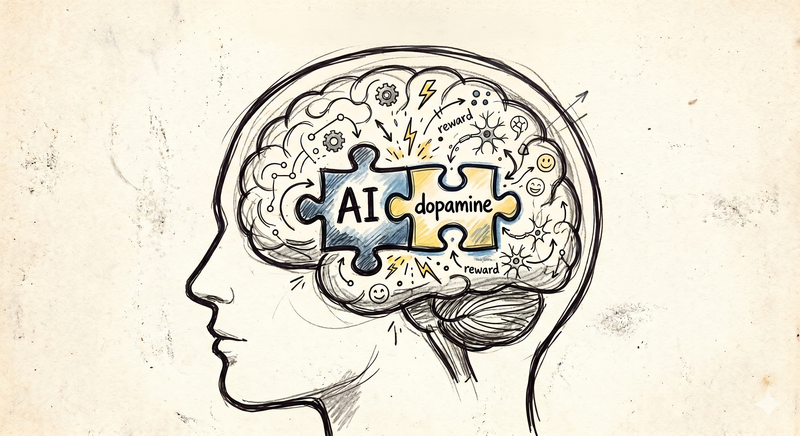
For the past year I've felt that way about AI. And I think we're all filled with emotions about AI. It's so exciting and promising, but also mysterious.
There's this feeling that "it can do anything if I only hold it right". That can lead to fear of holding it wrong, fear of missing out, and disappointment in the AI or yourself if it doesn't work as well as you imagined it would.
Links:
- You're falling behind. It's time to catch up. - Theo - t3․gg (32:45)
Many lightbulb-moments have given me a better fundamental understanding of AI and how to best use it. The context, cost, limitations. It has demystified the AI and I wish for others to have that insight too.
Let's begin far away from AI: with some nice, freshly baked bread.
You can bake lovely, soft, crunchy bread without knowing what "yeast" actually is or what it does.
"Add yeast, then set the clock to let the dough rise for one hour", the recipe says.
And the bread comes out fine. Usually.
But how does yeast cause the dough to "rise"? And should the dough be placed somewhere warm? But not too warm?
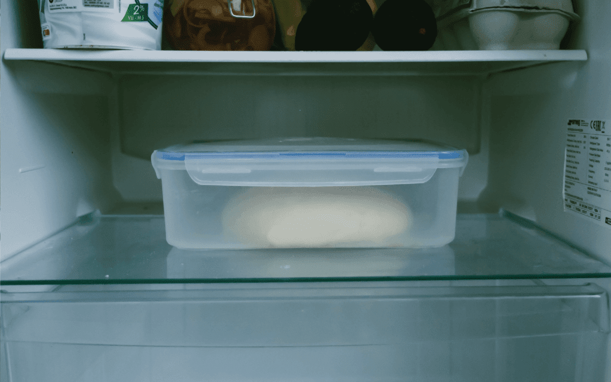
Some even say "put the dough in the fridge". It can seem a bit mysterious.
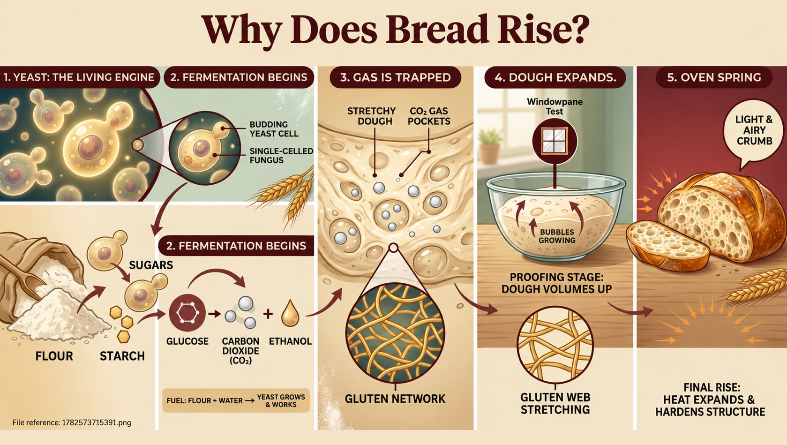
Now, if you know that yeast is a living organism that causes fermentation by using enzymes to feed on sugar in the flour, then the whole thing can become quite demystified. Still complex, sure, but you can now understand how the choice of flour, additives, and temperature over time affect the dough. And understand how you can make deliberate choices to "steer" the dough better.
For example a "cold ferment": let the yeast work normally for an hour and then place the dough in the fridge to put the yeast to sleep while the enzymes continue to work on building flavor and gluten. A lot of advanced baking processes can seem arbitrary or magical ("add diastatic malt powder to ...") but armed with a fundamental understanding of the way yeast and enzymes work you're much better equipped to understand them - and steer them your own way, too.
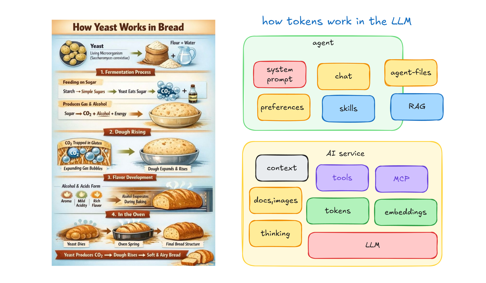
This presentation is about the yeast and enzymes of AI. And frankly, it's about all of the AI.
Will that kind of knowledge turn you into an expert baker overnight? Maybe not. But it will help you better reason about the underlying mechanisms, the fundamental behavior and limitations of the AI. Personally I have found that really, really useful.
It's my hope and goal that this presentation will help you rise (haha) to become much more confident in your use of AI.
"Keep it simple"
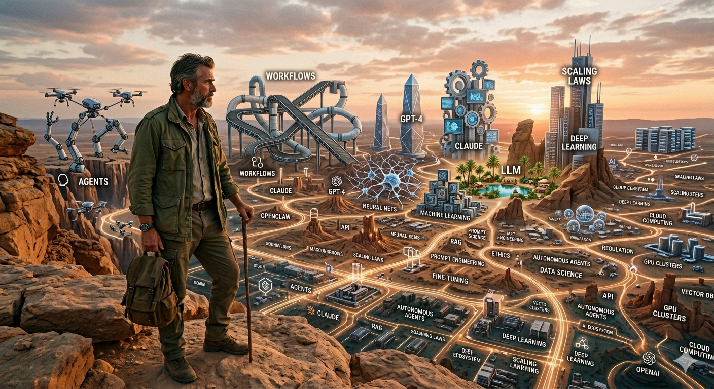
This may well have been the most challenging presentation I've ever put together.
It's not some fringe topic, like Quantum Computing where I could just shine or dazzle you and nobody would know anything about it beforehand.
On the contrary: everybody is interested in AI and everybody is using AI.
I should most certainly strive to give insights that are truly useful and I decided it would be the fundamentals: the LLM and AI-service itself, the core understanding that is still relevant in a year.
Just those parts. Just keep it simple, I thought.
"Simple", yeah right. Everywhere I looked there was a rabbit hole worthy of an entire presentation. Oh well.
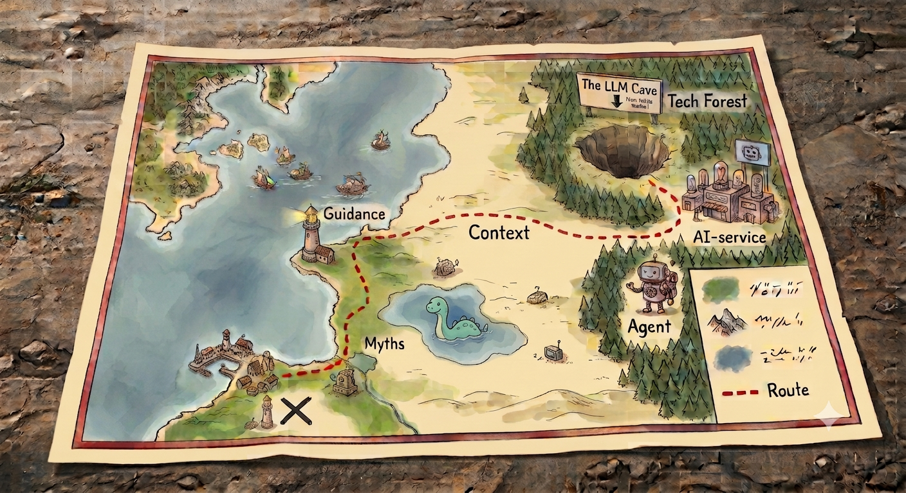
This is the path we'll take:
We'll start with the technical parts. How does the AI work? What can it do? In particular explore the LLM deeply because it is the most fundamental part of all.
With that knowledge loaded we'll see how to tame the context and look at some guidance and demystifications.
10,000,000 videos + 1
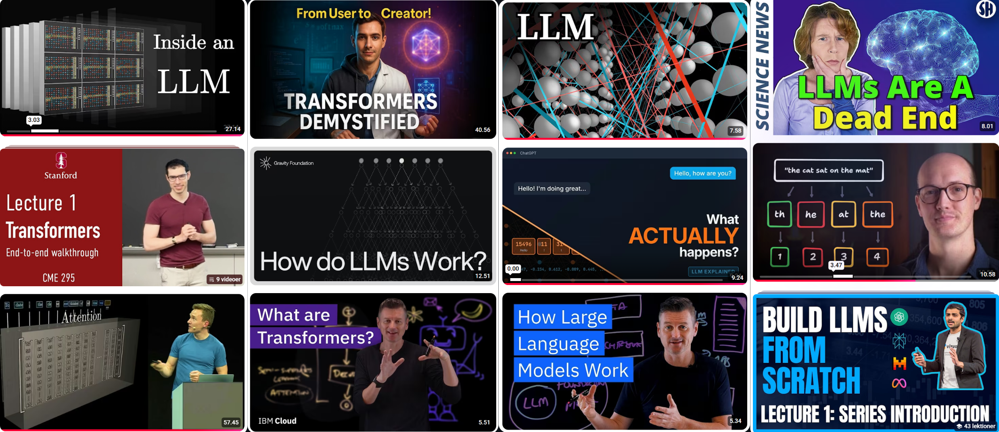
What can I possibly say that hasn't already been said in the 10,000,000 existing AI-related videos? Why not just give you 10 links to the most popular videos about AI and LLMs?
It's for the same reason that you ask an AI about any topic instead of reading some of the 10,000,000 webpages about that topic: it's just easier to get a refined presentation that tells the story in an insightful way, focusing on the good bits from those 10,000,000 videos. Also, you can ask any questions you have.
But if I had to recommend just one single video about "how AI works", then it would be this short one. Those 8 minutes are very well spent.
Links:
- Large Language Models explained briefly - 3Blue1Brown (7:58)
About that: if you're thinking "hang on, that can't be right" or "I don't get it!" then do feel free to raise your hand and ask questions.
Afterwards go revisit the slides at your own pace. They are on GitHub in a nice, readable format, with lots of links to related materials. (In fact, that readable format is what you're reading right now)
And ask me or other colleagues if you've got questions. I'd be happy to elaborate on everything I'm presenting here today.
Links:
- Marp: Ditch PowerPoint and embrace Markdown for creating slides - Infralovers GmbH (9:33)
I've really strived to make the presentation deep and useful but also entertaining and surprising. Be prepared to stay alert, because there's a lot to cover in only one hour so it will be information-packed and move fast.
Links:
- Veritasium: What Everyone Gets Wrong About AI and Learning – Derek Muller Explains - Perimeter Institute for Theoretical Physics (1:15:10)
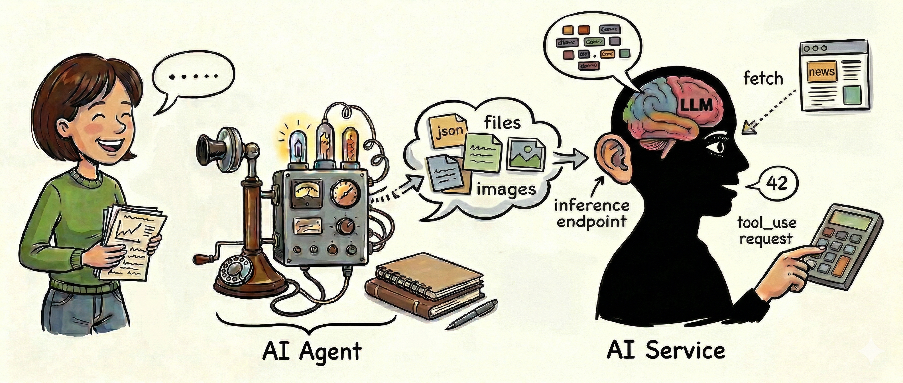
You, the human, use an AI Agent to communicate with an AI Service that turns your messages into tokens and feeds them through an LLM. The service and agent can use tools and the agent can remember.
This presentation focuses on AI that generates text, like Claude, ChatGPT, Gemini, Grok, etc.
So AI here means generative text AI. Not AI for generating images using stable diffusion, not AI for self-driving cars, not AI for folding proteins.
Links:
- AlphaFold - The Most Useful Thing AI Has Ever Done - Veritasium (24:51)
- A quest for a cure: AI drug design | Isomorphic Labs - Google DeepMind (47:08)
- Anthropic's Chloe Lubinski explains how AI works (in 14 minutes) - Alliance for Responsible Citizenship (14:34)
The LLM
The LLM is the most fundamental piece and even though it's quite technical, it's the best place to start for understanding how generative text AI works. So let's begin with the LLM and work our way out from there.
The LLM is the brain
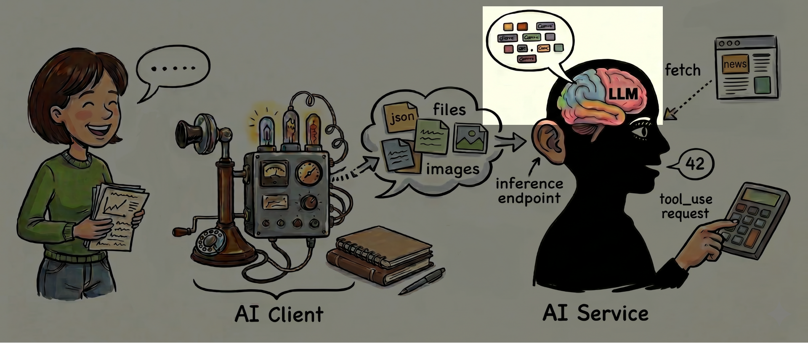
The LLM, the Large Language Model, is the part that does all the thinking.
"Please tell me: what is an LLM?"
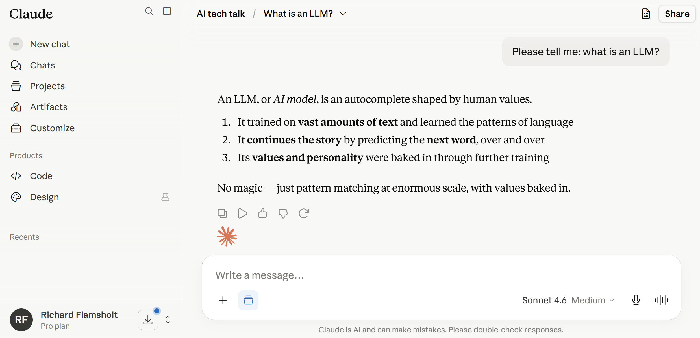
Here's an example I'll use throughout this presentation.
I'm asking Claude: "Please tell me: what is an LLM?"
The LLM only does math on numbers
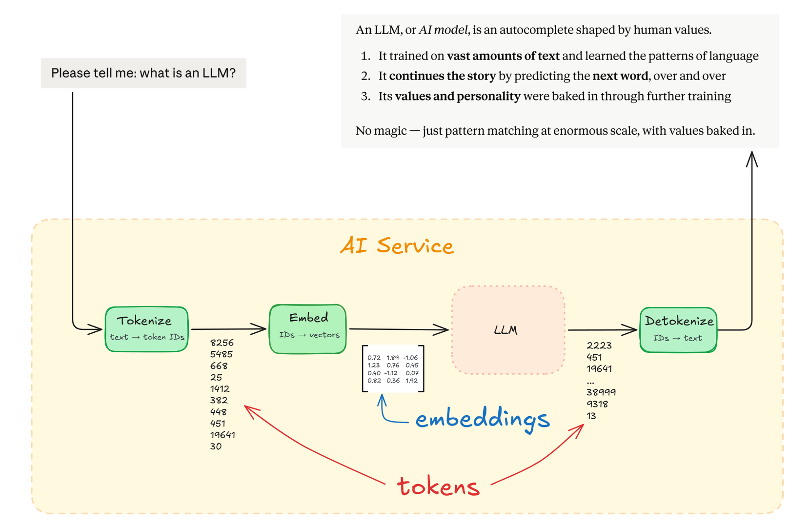
The LLM can't understand words. It only works on numbers.
Everybody has heard of tokens, but the numbers that the LLM works on are not those tokens. Instead it works on something very interesting called embeddings.
It's important to understand both, not least embeddings, so let's cover them first of all.
Tokens
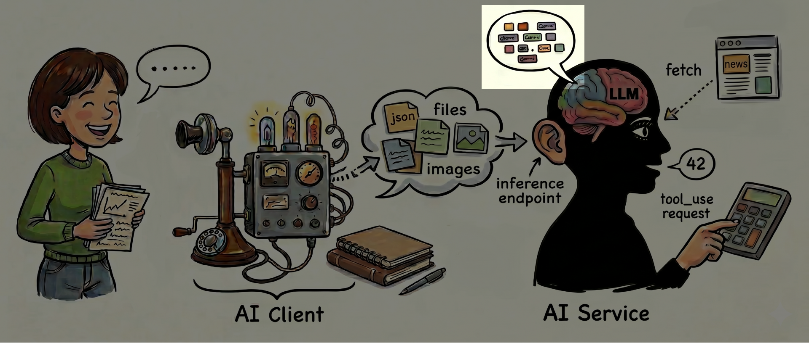
First let's focus on tokens.
Tokens go in, tokens come out
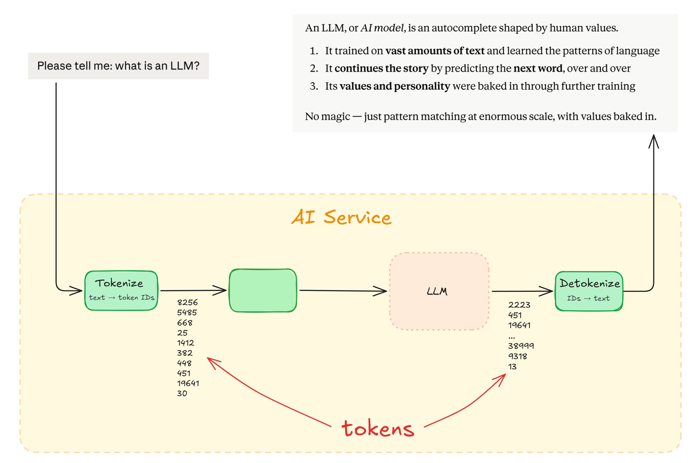
A token is
-
A token is practically a word, like
"hello" -
It is the chunk of text the LLM works on
-
Therefore, it's what you ultimately pay for
ChatGPT 3.5's token vocabulary
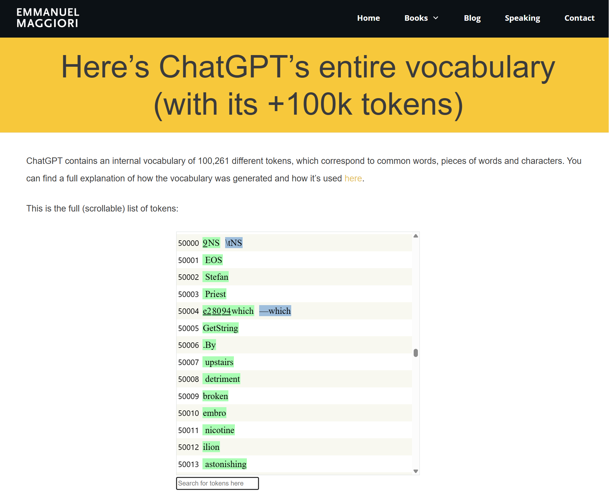
Every AI model has its own fixed vocabulary of tokens, usually in the range of 50-200 thousand individual tokens.
Those tokens are not hand-picked but arrived at by analysis of vast amounts of text, so there are many weirdly looking tokens that it just makes good statistical sense to have. The primary reason for having tokens at all is that working on bigger chunks of text, instead of single letters, is more economical. It’s simply cheaper to process the word “hello” as one chunk instead of the five individual letters.
Links:
- ChatGPT’s entire vocabulary
- ChatGPT’s vocabulary: The words that ChatGPT knows and how they were chosen
"hello"

An online tokenizer shows how "hello" is one single token.
Links:
"hello world"
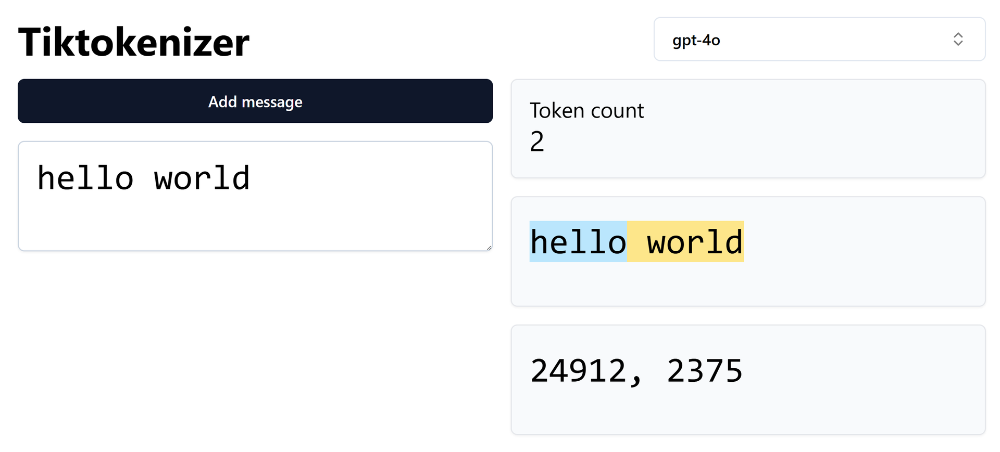
"hello world" is two tokens.
Yes, that second token really is (space) followed by "world". Turns out it's more efficient to have variations of tokens with or without space or punctuation than spending a token on (space).
"hello world from ..."

The first four words are common and each have their own token, but unsurprisingly "Flamsholt" is not common enough to be an individual token so it's made up of 3 tokens.
A Danish elevator "in motion"
In Danish, "I FART" means "In motion". Tourists are amused.
I fart poetry
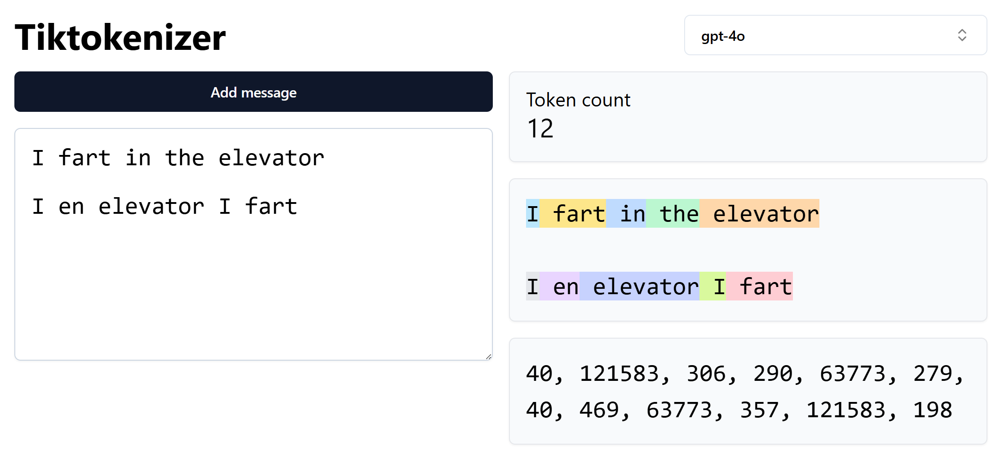
As you can see, the four letters "fart" are always the same token. The tokens are not aware of languages at all.
English words are most economical

English is "better" tokenized than many other languages, simply by virtue of English words being very common.
Here are some examples of English, Danish, Korean, Classical Chinese, and C#.
Notice how the English sentence is longer than the Danish sentence below it, but uses fewer tokens.
The example, tokenized

This is what the example conversation looks like when tokenized.
Notice how markdown for bold, the double-star "**", has its own token.
And the three-character sequence "**," is also common enough to have its own token.
Tokens recap
- A token is the chunk of text the LLM reasons about.
Which is the reason for introducing tokenization and tokens at all: it's simply more efficient to work on tokens than on individual letters - Tokens know nothing about language
- The processing cost is per token
For English, one token generally corresponds to about 4 characters.
Links:
- Most devs don't understand how LLM tokens work - Matt Pocock (10:57)
Embeddings
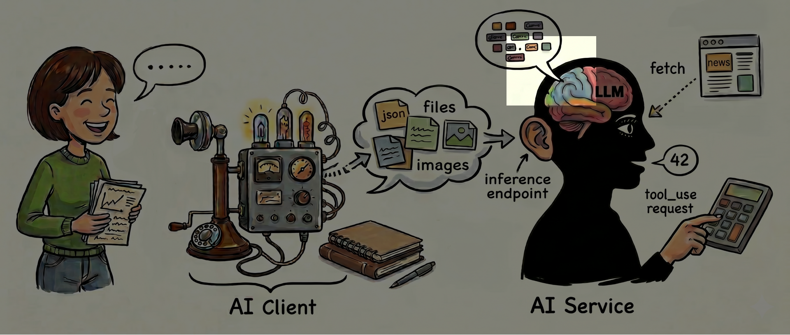
It's likely that you already knew about tokens. But the LLM does not deal directly with tokens. Instead, it works on something called embeddings.
Embeddings are sort of the "live" counterpart to tokens. They are very valuable to grasp the meaning of. It may feel abstract and complex so sit tight.
In AI, an embedding is a vector of numbers whose values somehow represent the characteristics of something
Links:
- Embeddings: What they are and why they matter
- What are Word Embeddings? - IBM Technology (8:38)
Confused? Okay, stay with me
Spotify's 80-dimensional music characteristics
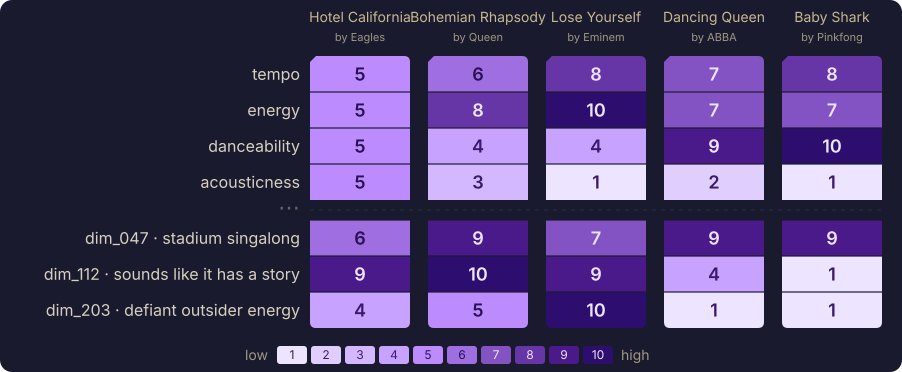
Imagine assigning a number to characteristics of music. Both "Lose Yourself" and "Baby Shark" score high on "tempo", but vastly differently on "defiant outsider energy".
In fact, Spotify really does characterize music using such 80 dimensions.
Imagine capturing the "essence" of ... anything

Now, imagine if you could characterize anything with suitable characteristics. For example, "laughter" is quite "ancient" while "software developer" is not very "ancient".
That's essentially what the purpose of an embedding is, to the AI.
An embedding is a token's characteristics
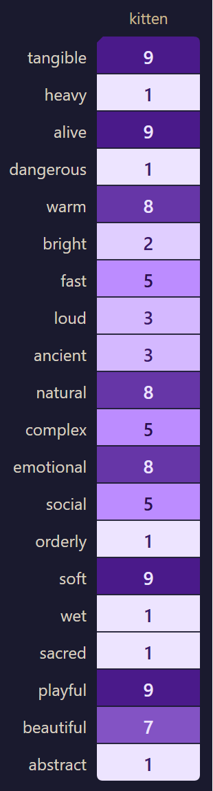
An embedding is a list of numbers (also called a vector or tensor) that somehow characterizes something. Sometimes called "features", as each value in the vector encodes some semantic trait of the thing.
The number of nuances, characteristics, we decide to use is called the embedding's dimension. The embedding for "kitten" here has 20 dimensions. The more dimensions, the more nuances can be captured.
Each number is called the weight of that dimension. A kitten is very playful (weight=9) and not very wet (weight=1).
An embeddings can express any word you know. Any sentence that exists. Any feeling you can have. Any possible concept, for example a curious yet mildly confused audience.
Links:
- Tokens vs Embeddings – what are they + how are they different? - Annie Sexton (6:52)
1 token's meaning is represented by 1 embedding
ChatGPT 3 has 50257 tokens, each described by a 12288-dimensional embedding
In the AI, an embedding is a large set of numbers, for example 12288 numbers in ChatGPT 3, that characterizes a single concept, for example the token "amplification" or "gazed". It may sound a bit crazy that it could even be possible to somehow characterize anything with such shared aspects but yes, that's what's happening.
Links:
- Why LLMs Live In 12,288 Dimensions - ML & AI: Foundations & Methods (32:41)
More examples
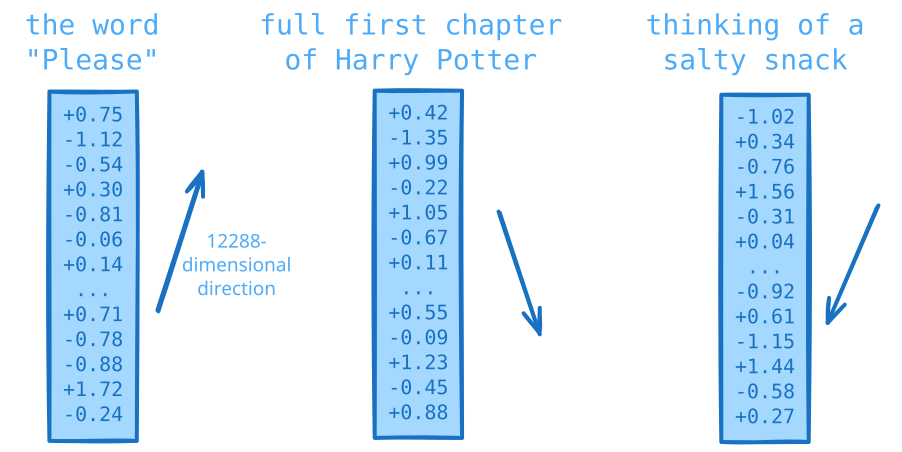
Frankly we simply don't know what the dimensions or numbers mean. They don't map crisply to existing human concepts but only make mathematical sense. Dimension number 7 of "Please" might contribute a little to politeness, a little to interactivity, a little to something related to food, and a little to some abstract concept that doesn't map to any word in English.
There's a research field called mechanistic interpretability that tries to decompose these representations into interpretable directions. It's possible to extract interpretable features, but understanding how features compose to produce behavior is still largely unsolved.
Links:
- Scaling Monosemanticity and Feature Steering
- Emotion concepts and their function in a large language model
- How might LLMs store facts | Deep Learning Chapter 7 - 3Blue1Brown (22:42)
Imagine an embedding as a "direction" in a hyper-dimensional space of "everything that exists"
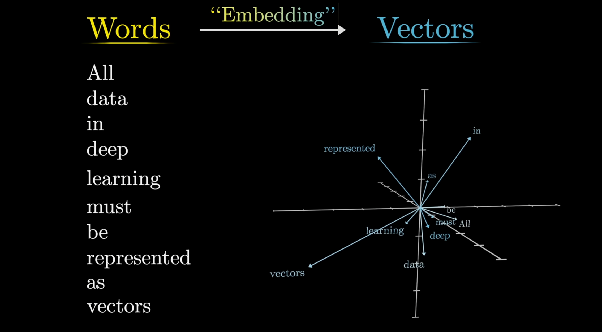
One way to think about an embedding is as a "direction", an "arrow", in a hyper-dimensional space of every conceivable and inconceivable concept, aka latent space.
Because that is, in fact, what an embedding is: a "direction".
Similar "meanings" have similar "directions"
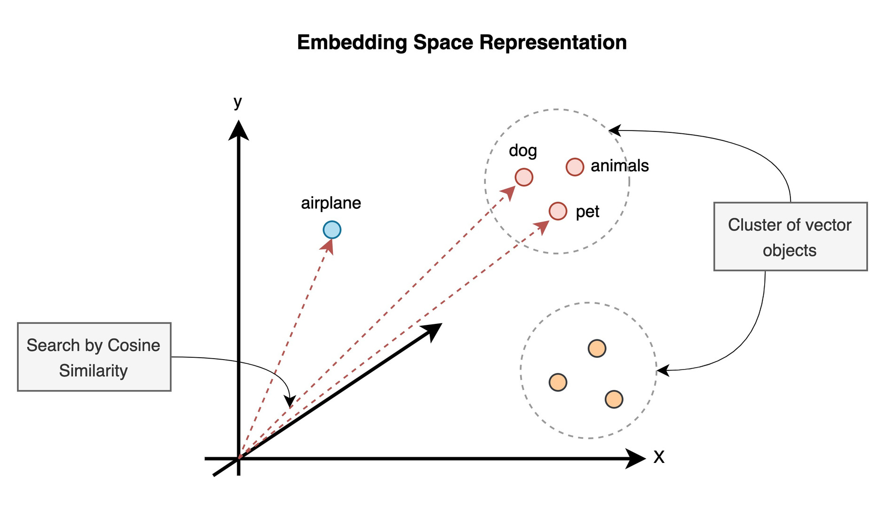
The more similar two "meanings" are, the more similar their embedding-numbers will be.
So similar meanings (concepts, objects) tend to "cluster" together, in this 12288-dimensional space.
The big surprise to everybody:
We can "do math" on language
Don't worry, there will only be a little bit of math.
Example: Two embeddings, man and woman
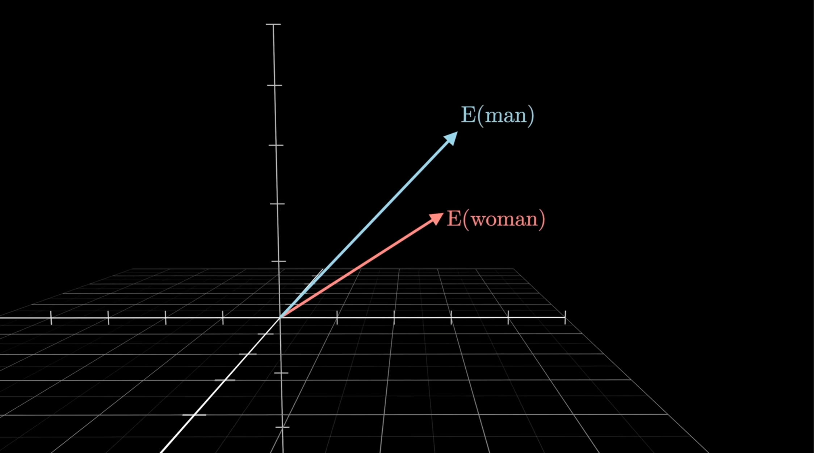
Imagine the two embeddings of the words for "man" and "woman" as directions in this space.
They're somewhat similar because men and women as concepts are pretty similar, but they differ in the sense that "man" is masculine and "woman" is feminine.
Uncle and aunt
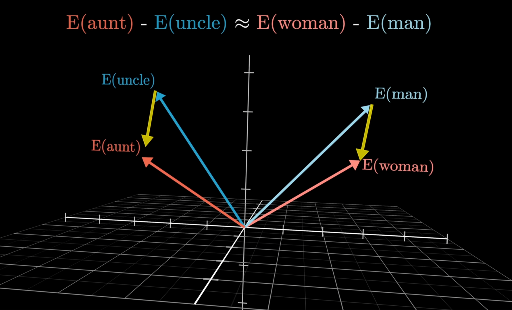
Now it turns out that the "difference", or "direction", between the words "man" and "woman" is pretty much the same as between the words "uncle" and "aunt".
Nephew and niece
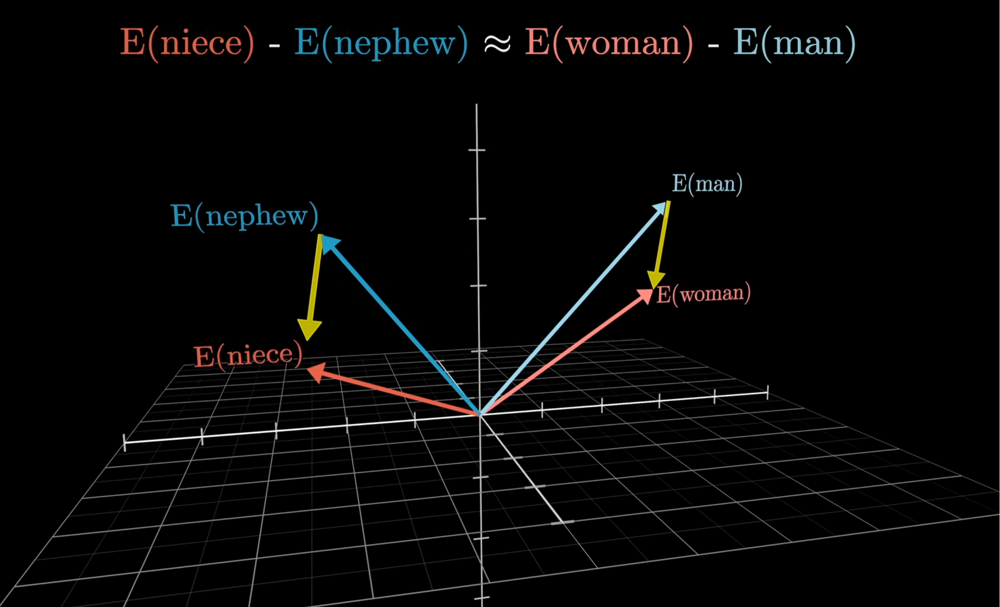
Not only that, but it's the same direction between the words "nephew" and "niece".
King and queen
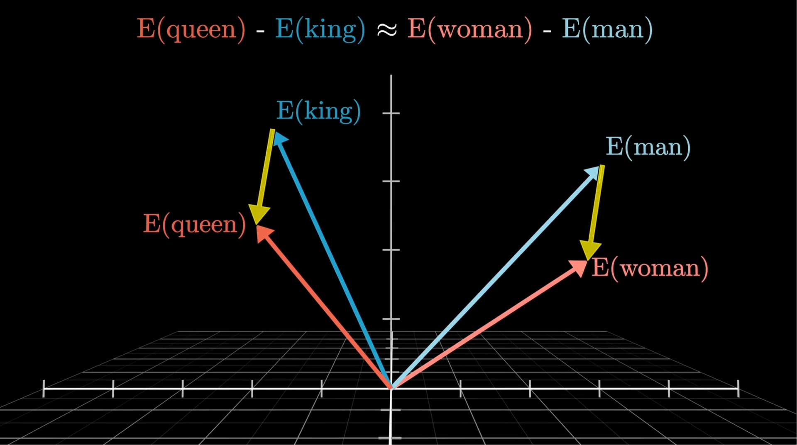
And the same direction between the words "king" and "queen".
In practice this is the weakest of the examples, because "king" and "queen" have many more meanings than just masculine and feminine royal titles.
Links:
There's a "gender direction"
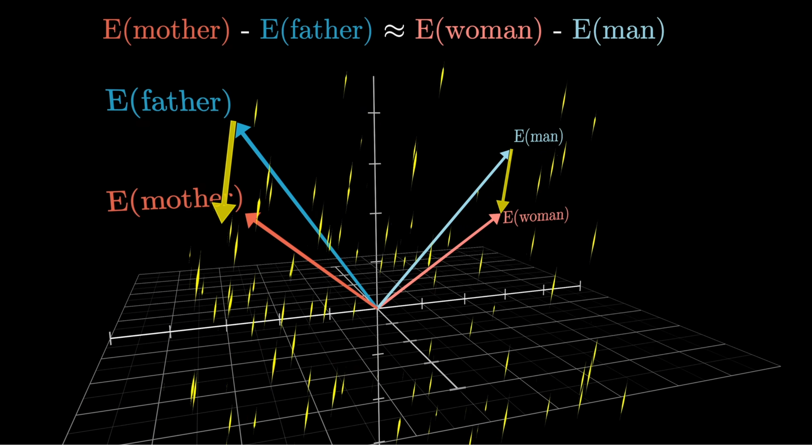
So very surprisingly, it turns out that there exists a kind of "gender-direction" in this space of meanings.
In fact, we have identified the embedding (a direction is an embedding) of the concept "the feminine version of something".
The direction for "sadness"
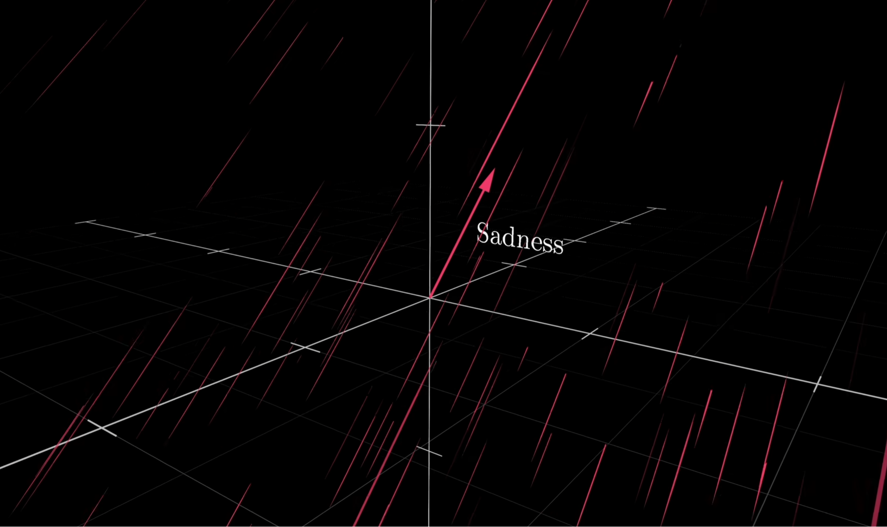
Turns out a direction/embedding also emerges for "sadness".
The direction for "whimsical"
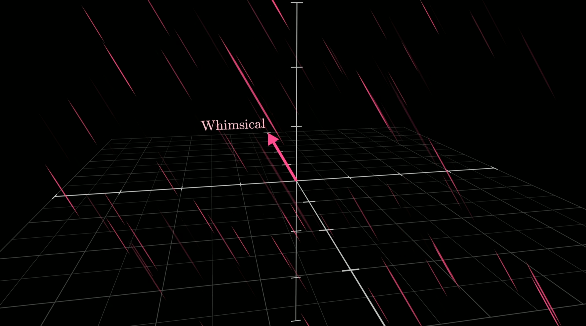
And for the concept of "whimsical".
The direction for "spatula"
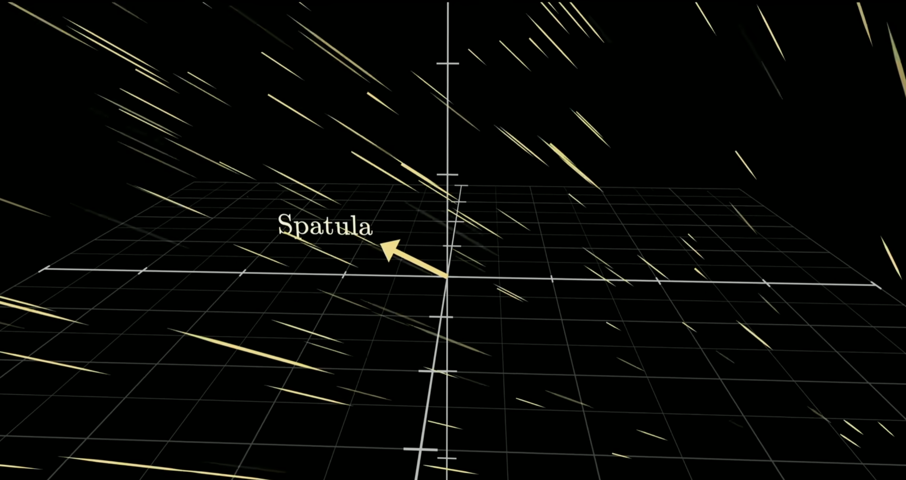
And "spatula-ness".
"____ is to Germany, what Sushi is to Japan"
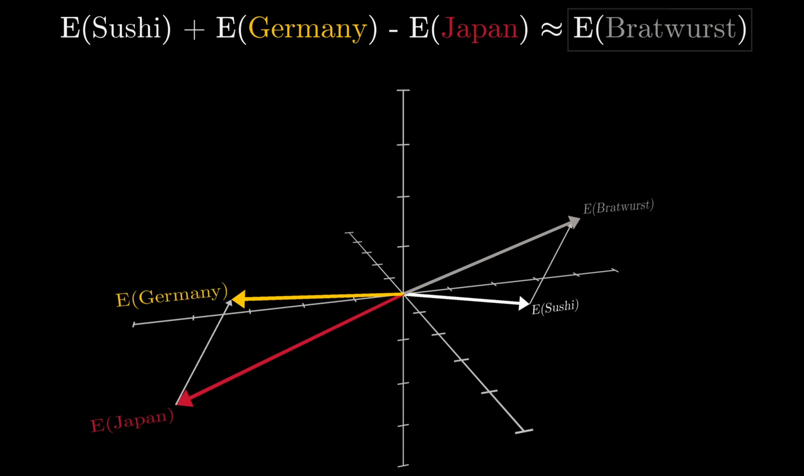
The math works so well that if you add up the directions for "Sushi plus Germany minus Japan" then you land near Bratwurst.
What a surprise!
What a surprise: with the right modeling, we can actually do math on language.
That's certainly a discovery that has deeply shaken classical generative linguistics, pioneered by Noam Chomsky. For decades, Chomskyan linguistics has argued that language cannot be learned purely through statistical approximation from exposure to text. The overwhelming opinion now is that yeah, apparently language can be learned that way. The proof is in the pudding, so to speak.
Links:
- To Understand LLMs, Forget Chomsky
- "This CRAZY Man at MIT called Chomsky" - How to AI (2:30)
- Chomsky was wrong.They taught me a lie. - languagejones (24:42)
The LLM is all about "doing math on embeddings"
The implied math in the examples of gender-directions and Bratwurst is a hint at what kind of machine we're going to need to understand and process the input embeddings.
Think about what it means that "man" to "woman" is the same direction as "uncle" to "aunt". The direction emerges from having seen thousands of such pairs in texts, and it isn't tied to any one of them: whatever the model has learned about "man" and "woman" applies equally well to "uncle" and "aunt", and the other way around.
It turns out the machine we're about to look at in principle really only does one thing: take embeddings and nudge them - add a bit of this direction, a bit of that one - until they point at the answer. That's the whole trick, in a nutshell. Adding directions, turning them a bit up and down, over and over and over again.
That machine is called the Transformer, and we'll cover that next. First, let's recap this section on embeddings.
Embeddings recap
-
Embeddings are "meanings" and that meaning can be transformed with math
-
An embedding is just some numbers. Cheap to store in a database and work on.
-
You can compare embeddings to figure out how similar the meanings they represent are. For instance, find a synonym by simply finding the closest embeddings to a word.
Links:
- What Are Word Embeddings? - Under The Hood (19:32)
The Transformer
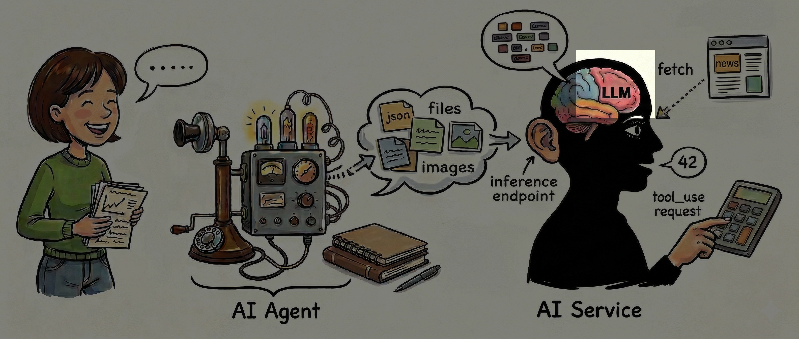
Today's LLMs are built on an architecture called the Transformer. The terms are used almost interchangeably.
It's time to concretely dive into just how the LLM aka Transformer works.
The example's embeddings
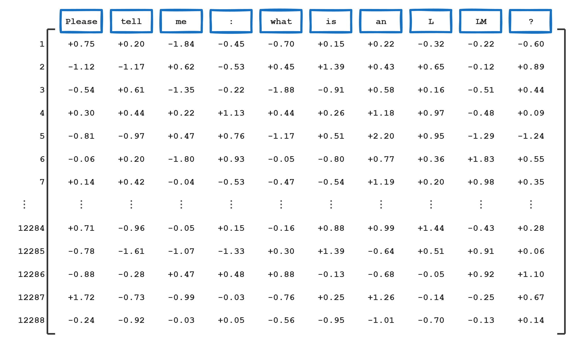
Here's our example again, with the corresponding embedding for each token. Remember, each of these lists of 12288 numbers, the weights, represents the core meaning of that single token. The meaning of "Please", the meaning of "tell", the meaning of "me", and so on. Those weights are constructed during the LLM's training which we'll cover later.
Putting the example through the LLM
The context is the input given to the LLM - here, the embeddings of 10 tokens
The context window is the longest input possible, typically 200,000-1,000,000 tokens
The LLM generates the next token, called inference, by running the embeddings through a giant neural network
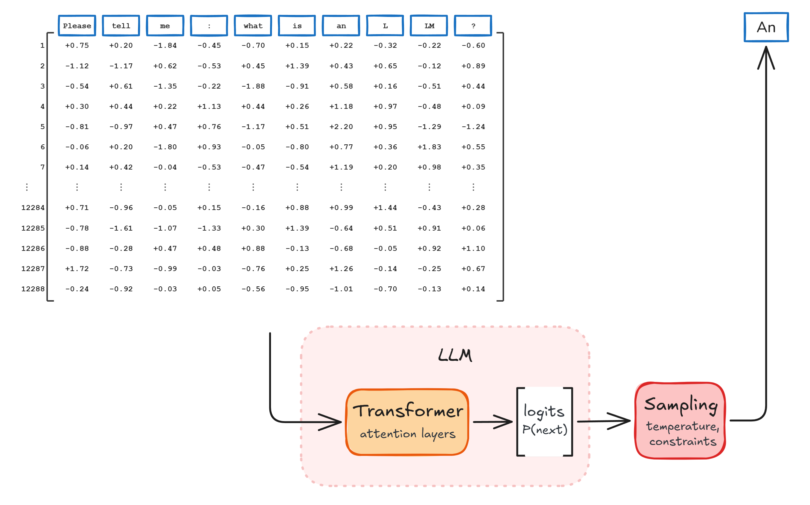
Two things to note here:
Why only "An"? Why not the full answer? Yeah, hold your horses just a bit longer, because: the LLM only deals with producing one next token. That's all it is concerned about: figuring out what probability any of the tokens in the vocabulary has of being the desired next token.
That's the second thing to note: the LLM itself just produces this set of probabilities. The mechanism that actually picks that next token is, strictly speaking, outside the LLM. Let's include it here to convey that the outcome is eventually a token, namely "An" in this case.
Links:
- Large Language Models explained briefly - 3Blue1Brown (7:58)
A neural network
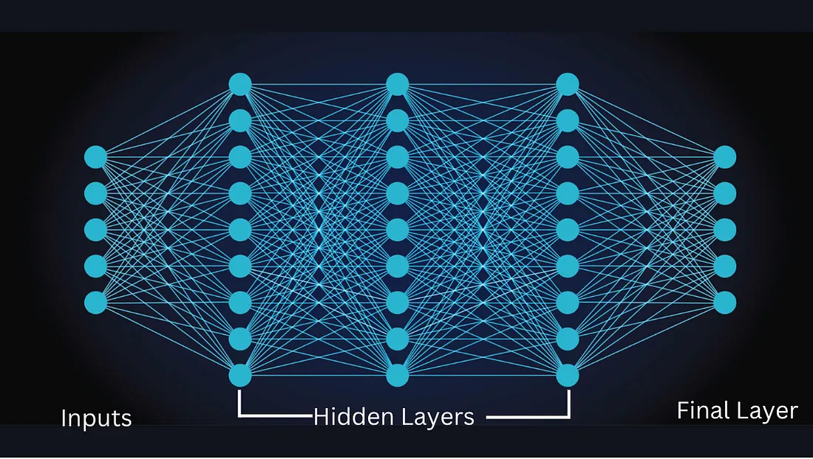
A neural network is basically just a giant, organized set of multiplications and additions.
Links:
- Neural Networks Explained in 5 minutes - IBM Technology (4:31)
- Why Deep Learning Works Unreasonably Well [How Models Learn Part 3] - Welch Labs (34:08)
Add up, multiply by factors, add up, ...
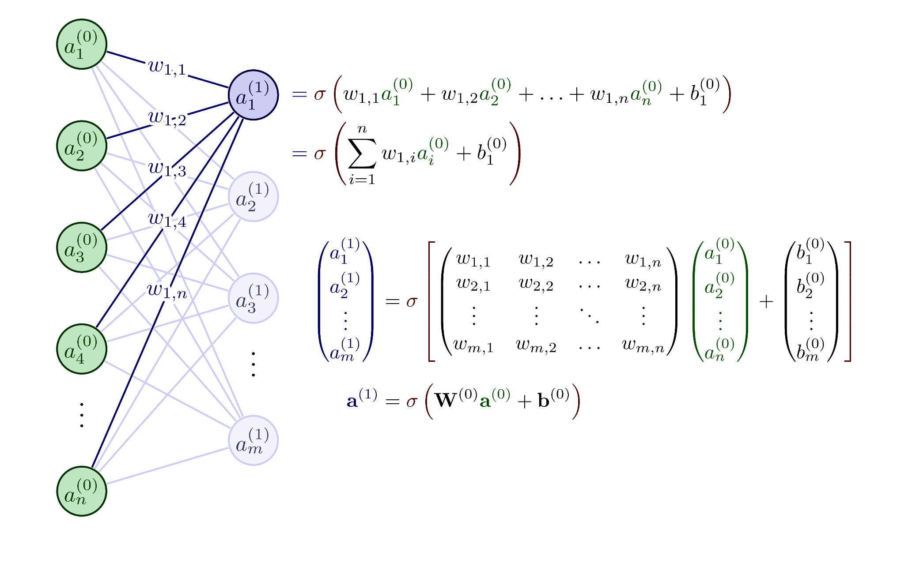
You feed the network some numbers, the numbers go through a number of steps where they are multiplied by "weights" and then added up, and out comes other numbers. And so it continues.
"The capital of France is ..."
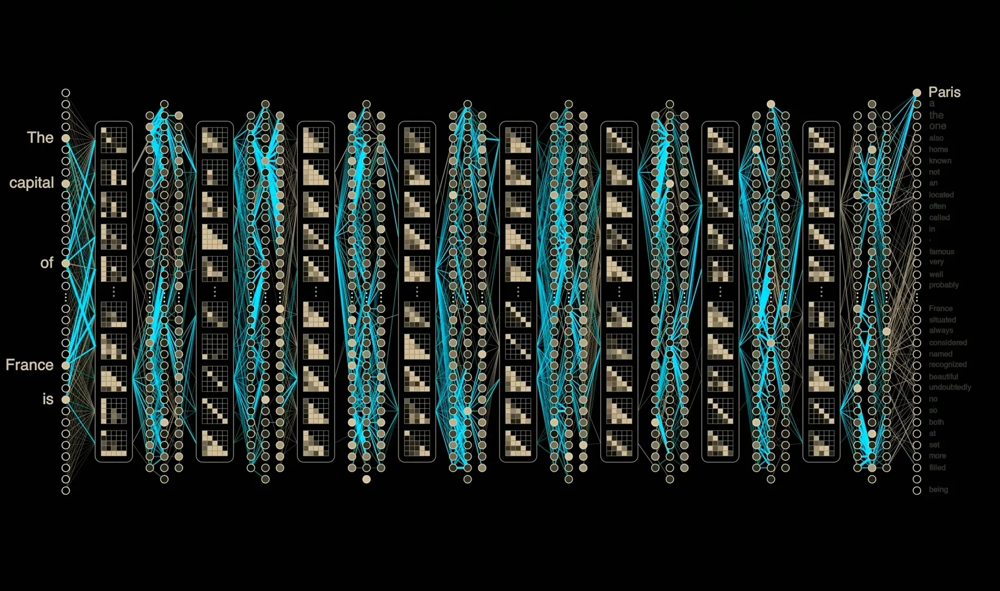
The thing is that if you adjust those small "weights" appropriately then you can shape the output to actually match an expected outcome. A sufficiently large network could for example after billions of calculations produce a number that represents "Paris" if we feed it numbers that represent the sequence "The capital of France is".
And that is in fact what the LLM does.
Links:
- But what is a neural network? | Deep learning chapter 1 - 3Blue1Brown (18:40)
The LLM's objective: find the likely next token
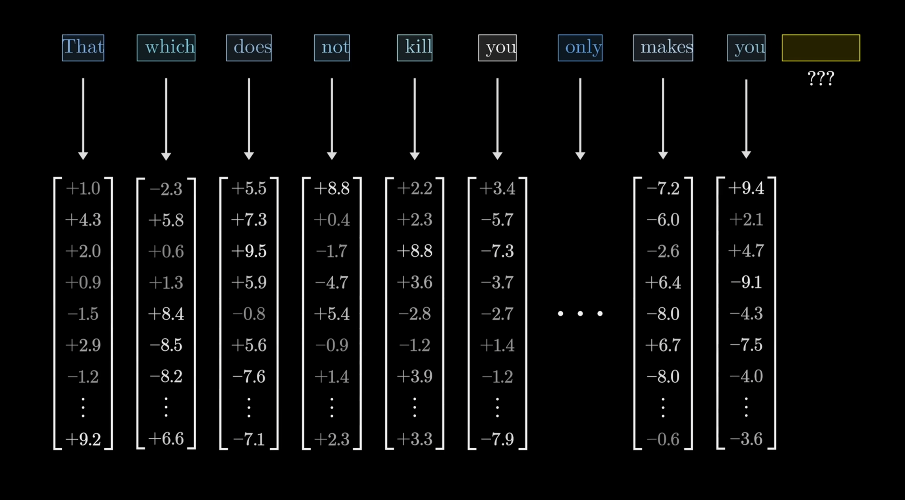
Let's focus on this example:
Find out what should follow "That which does not kill you only makes you ___".
Just choosing the statistically most likely next word to follow "you" won't work. We need to look at more context to decide what naturally should follow that "you". Frankly, we probably need to look at all that comes before that "you" to properly decide on what should follow. That's a tough task for longer sentences.
Enter: The Transformer, in 2017
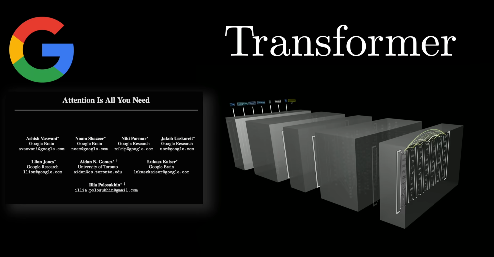
The invention that made all of this possible, is called the Transformer.
"Attention is all you need"
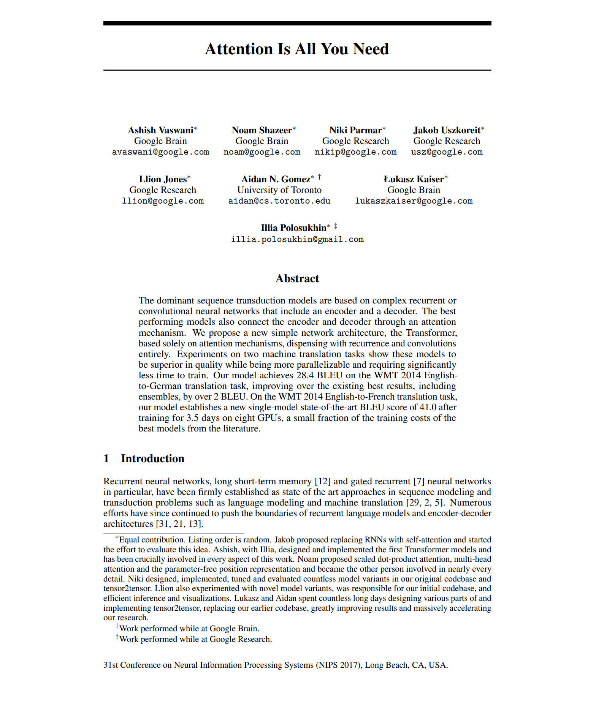
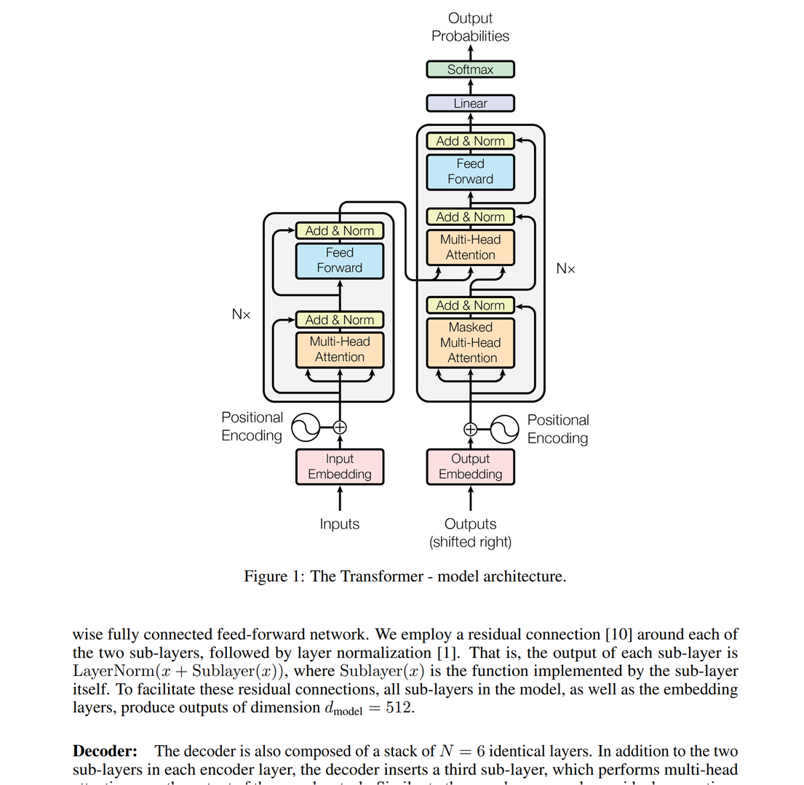
The 2017 paper "Attention Is All You Need" by Vaswani et al. is arguably the most consequential piece of computer science research published in the 21st century.
Today, the paper sits at over 200,000 citations, making it an absolute statistical anomaly in scientific literature.
It is the cornerstone of modern AI. Without it, there is no ChatGPT, no Gemini, no Claude, no Stable Diffusion, and no AlphaFold. It transformed AI from an academic field of hyper-specialized, rigid pipelines into a unified era of generalized foundation models.
Links:
- Attention Is All You Need
- The 35 Year History of ChatGPT - Art of the Problem (26:55)
The Transformer can figure out the next token
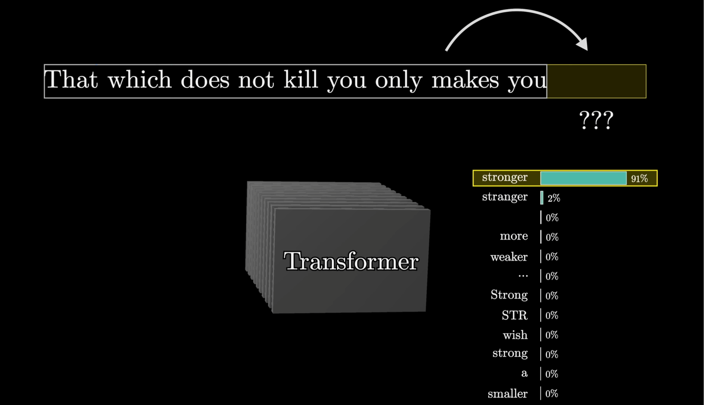
Next, let's see what actually happens inside the Transformer. The next slides are intentionally free of math because the main reason for showing the context's pass through the Transformer is just to convey a gist of what's going on inside and the vast scale of all the math that happens.
Links:
- Transformers, the tech behind LLMs | Deep Learning Chapter 5 - 3Blue1Brown (27:14)
First, all embeddings "pay attention" to each other
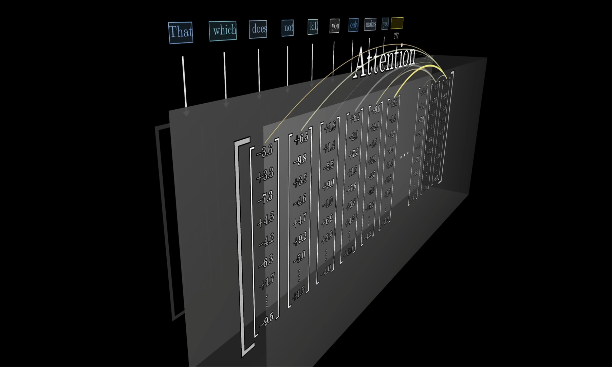
Every embedding gets influenced by every embedding token before it. They "absorb" the meaning of all those other embeddings, influenced also by the position. The first "you" and the second "you" come from the same token, yes, but by virtue of their position they don't carry the same meaning, i.e. they don't start out as the same embedding-values, and they therefore influence the other tokens each in their own way.
For a full 1M context this means that a million embeddings each pay attention to all other embeddings before it. That's in the order of a million times a million calculations.
This is the part that most directly leverages the fact that we can "do math on language" by concretely doing arithmetic on the directions that the embeddings really are. This is where we "Add Sushi to Germany", so to speak.
Links:
- Attention in transformers, step-by-step | Deep Learning Chapter 6 - 3Blue1Brown (26:09)
Then passed through a neural network
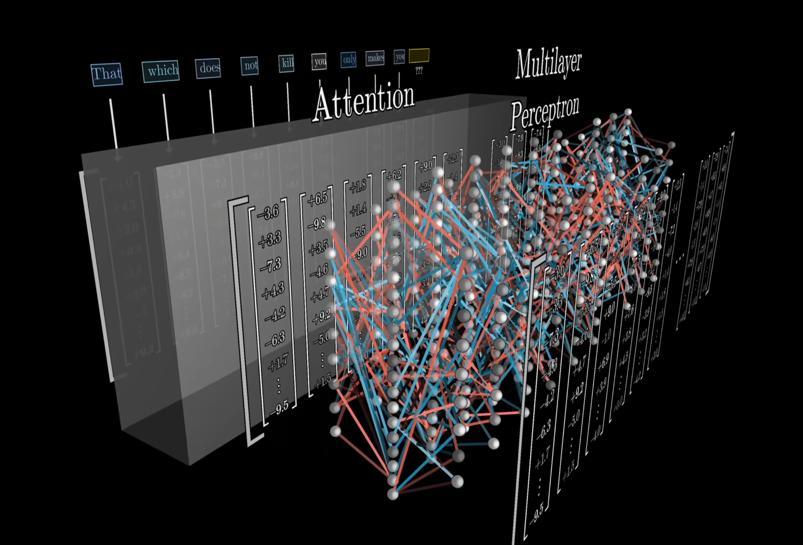
Next, the model's built-in training shapes the meaning of the embeddings.
Focus on the strong signals
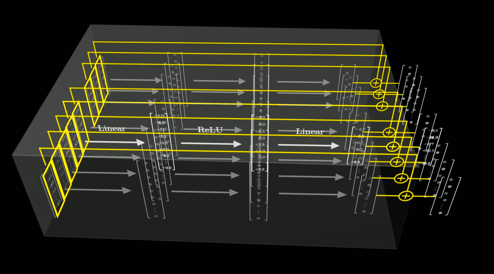
More math dials up the contrast, in a way: it boosts the strong signals and suppresses the noise.
Links:
- How might LLMs store facts | Deep Learning Chapter 7 - 3Blue1Brown (22:42)
Let's do it 96 times (attention layers)
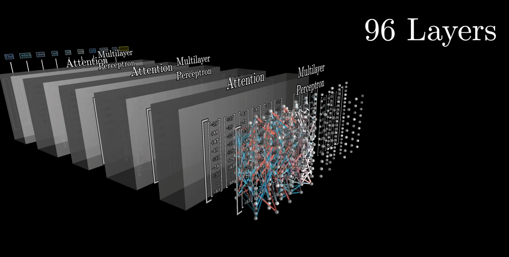
Through billions of additions and multiplications.
Final numbers: the desired "next meaning"
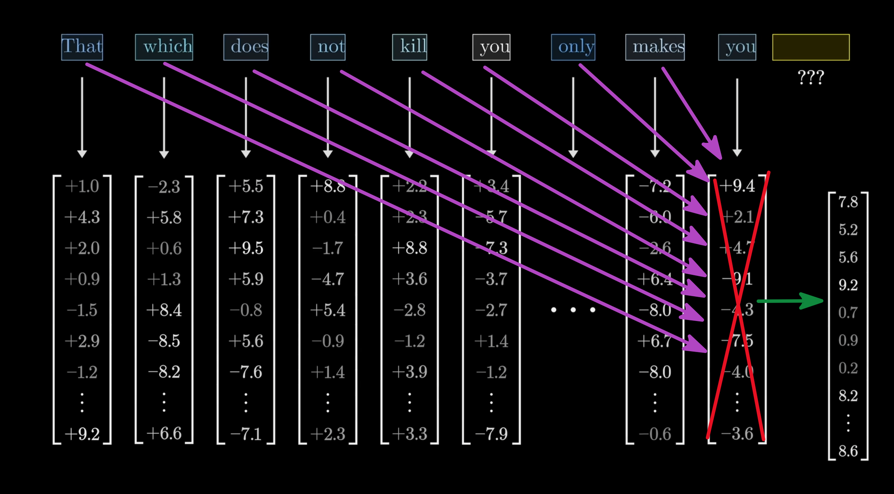
After going through 96 trips of embeddings influencing each other, the final vector has absorbed all the relevant meanings of the entire context and now reflects what the LLM has been trained to predict the following embedding "most likely looks like".
Then "simply" find most similar token
Compare the final expected embedding to the embeddings of all tokens in the vocabulary (e.g. 200,000 tokens) by taking the dot-product, which compares the two directions.
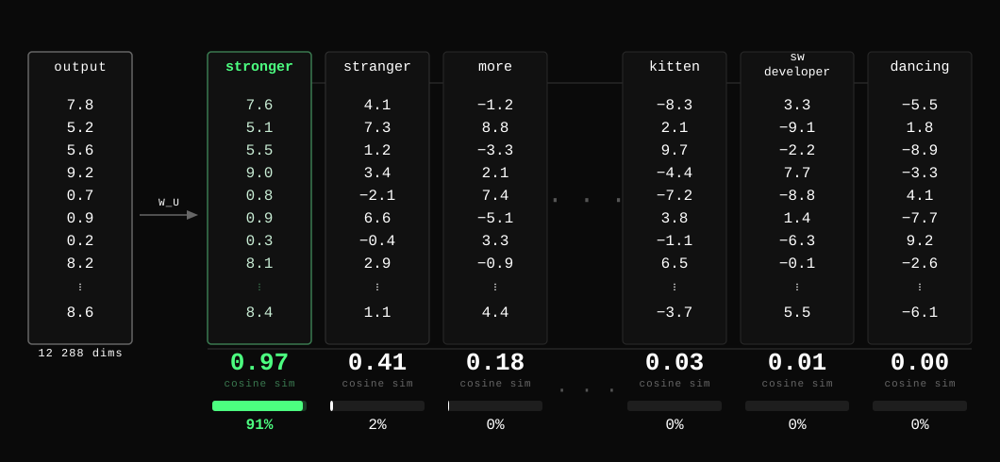
Then, it's "simply" a matter of finding out what tokens are most similar to the desired meaning.
Is it "dancing?" No.
Is it "sw developer"? No.
Is it "stranger"? That one's pretty close.
Is it "stronger"? Yes, that's the closest known token.
Choose the final output token
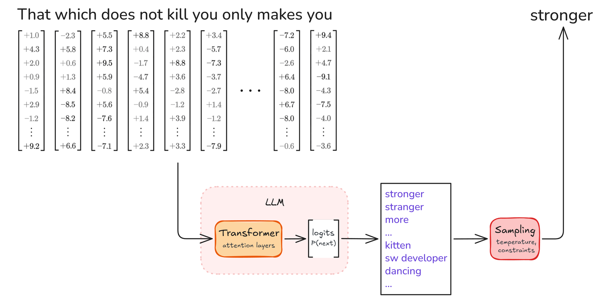
The final output token is chosen based on the probability of the closeness to the final vector-values. Here, "stronger".
Links:
Back to "Please tell me: what is an LLM?"
For this context, the LLM will produce token "An"
For a full sentence: repeat until LLM says stop
Keep on adding the produced token to the context and go another round through the LLM, until the LLM emits a special "end of my turn"-token.
Let's flesh out the first couple of output-tokens just to be completely clear about what's happening here.
What the LLM is actually getting is a tad more elaborate than just the question. The context looks more like a real conversation. After the user's message, there's actually also an "end of my turn"-token, but I've omitted that here for simplicity.
user: Please tell me: what is an LLM?
assistant:
The first round produces "An". Then "An" is added to the context, which now reads
user: Please tell me: what is an LLM?
assistant: An
That context is now passed through the Transformer's 96 attention-layers, this time producing token " L", which is then added to the context
user: Please tell me: what is an LLM?
assistant: An L
and fed through the LLM once more, producing "LM", then ",", then " or" etc. Over and over, token by token, until the most likely next token for the LLM to choose is the special "end of my turn"-token.
85 roundtrips for 85 tokens
The 85 produced output-tokens each require a full pass of the growing context through the LLM, where the LLM's own produced tokens are added one by one to the context.
Tokens are really generated one by one
That's why output tokens are typically 5 x more expensive than input tokens.
Each token really is generated by a completely independent pass through the LLM that chooses the most likely next word to come after the context.
However, studies have found that the LLM actually does latently plan for the continuation that follows this single token; the pass that produced "An" is poised to very likely produce " L" and "LM" afterwards.
The field of study is called Interpretability and the weights that seem involved in such "thoughts about future planning" are dubbed J-Space.
Links:
Transformer recap
-
The Transformer does essentially one thing, billions of times: it nudges embeddings by adding up directions and dials them a bit up and down
-
It only works because the "directions" that emerged via training behave generally
For example there is a "feminine" direction, which means that patterns involving "man"/"woman" can generally apply to "uncle"/"aunt" too -
It's still all just pure math and statistics
- No web-browsing
- No dictionaries of facts
- No "if-then-else" code
-
There are no "hard rules" in the Transformer, only influencing
"You MUST" is just two single tokens that can try their best to influence the full context
Now we can close the loop back to the embeddings section.
Back then, the "gender-direction" might have looked like a fun curiosity. Now you can see that it is actually the thing this whole architecture hinges on.
Consider what the Transformer does. In attention, every embedding absorbs the ones around it; that's directions being added. In the network layers that follow, the embedding gets pushed further still; that's more directions being added. 96 rounds of doing one thing, over and over: nudge this embedding a bit that way. It's the meanings of "Sushi" plus "Germany" minus "Japan", billions of times.
And that's why the surprising aspect of being able to "do math" on language matters. Without that ability, all that nudging would be pointless because a direction learned for one word would mean nothing for any other. The learnings would not have generalized, which is the entire point we're after. That "meanings" turned out to be something we can "do math on" is the key to the Transformer's success, and hence to all the generative text AI models we have today.
When you understand this, you also understand why it's practically impossible to steer the LLM absolutely, for instance to have it stick to a certain output format. All the little bits of the context simply pull and tug and influence each other. There are no "hard rules" in that process, only influencing. If you say "You MUST", then what you're really adding is just two single tokens, and while they of course do influence the full context and all the LLM-generated tokens, they're still just that: an influence, not a guarantee of the outcome.
Training
We've seen how the LLM using pure math can produce "the likely next token".
But how has it learned that? So far, the embeddings are just 12288 mysterious numbers pulled from thin air.
Let's explore that by starting with this question: Are all AI models actually the same?
Are AI models "really all the same?"
Admittedly I coached ChatGPT into dialing up its "chatgpt-ness" to the max before asking this question.
And honestly? It worked.
How models are trained

Pretraining is where the model learns about language. Looking at vast amounts of text, it learns to predict the next token — nothing more. The result is a powerful but raw capability: it knows how language works, how facts relate, how arguments are structured. It has no personality, no values, no sense of what a "good" response looks like.
Post-training is where the model learns what an appropriate response is. This is where values, tone, refusal behaviors, and personality get baked in.
Pre-training on "all sentences in the world"
The training material is pretty commonplace for all frontier models nowadays. It's in the order of 1-5% of Google's index.
Model and embeddings are born via training
Backpropagation:
- Run tokens through the network like at inference time
- Paths to the expected token are rewarded, other paths are punished
- Adjust all network weights, back to the embeddings
- Causal masking trains on all sub-strings, too
- Train on a gazillion texts
Finally, rather unceremoniously: this is how both the model's weights and the embeddings get their values: by training immensely to find the right balance where all training texts produce the expected next token.
It works like this, in principle:
- A well-known sentence minus the last token is passed through the full model network, all 96 or so layers.
- The last token is expected as the output; here "stronger"
- All the paths that produced that token get dialed up a notch and all others dialed a bit down - all back through those 96 layers, all the way back to the embedding itself
- Now simply repeat this a gazillion times with the entire training corpus.
- Eventually the network and embeddings, which were initially random, end up with values that generally produce the "likely next token" for all those trained sentences.
That's how the AI model and the embeddings are born.
And it's amazing that it works, and that it ends up producing embeddings that had a notion of "gender" and "sadness" etc.
Backpropagation math is ...ok, let's move on...
It's taken some effort to figure out this math, but it's pretty simple to execute.
Links:
- Gradient descent, how neural networks learn | Deep Learning Chapter 2 - 3Blue1Brown (20:33)
- Backpropagation, intuitively | Deep Learning Chapter 3 - 3Blue1Brown (12:47)
- Backpropagation calculus | Deep Learning Chapter 4 - 3Blue1Brown (10:17)
- ChatGPT is made from 100 million of these [The Perceptron] - Welch Labs (24:01)
A trained model = embeddings + weights

A trained model therefore consists of two parts:
The embeddings, meaning the vector of numbers for each of the tokens.
And the AI model's many billions of small factors, weights.
Once the training is completed, the embeddings and weights are frozen, never to be changed again. Not until they are used to kick-start training of the next model.
Pre-training is expensive
-
From scratch for a new model
- costs $200M-$1000M
- takes 4-8 months
-
From an existing model
- costs 1-10% of full training
- takes weeks or months
Pre-trained models are just autocomplete

After pre-training, the LLM is really just a statistical prediction-machine. It's great at figuring out the likelihood of what tokens should follow next based on all the trained sentences. But it has no judgment, no pushback, no idea of what a desired outcome looks like.
Post-training is what shapes the model
Different personalities
ChatGPT – Structured explainer
Gemini – Diligent researcher
Claude – Honest advisor
Grok – Radical truth-seeker
Meta AI – Powerful engineer
Mistral – Efficient European
DeepSeek – Censored thinker
Post-training: reinforce the desired outcomes

In post-training, sentences are again fed through the LLM just like during pre-training. But this time a sentence is run through the LLM twice and the two outputs are compared against the AI lab's stated values. All the little weights that produced the winning sentence are dialed up a bit, and all the little weights that produced the losing sentence are dialed down a bit. Just like during training, but this time based on an assessment of how desired the output is.
Two outputs will always vary if there's any kind of wiggle-room in the possible continuations. The LLM will really only produce identical outputs if there is just one probable continuation, e.g. for "in one digit, what is 2+2?".
Reinforcement Learning by Feedback
RLHF - Reinforcement Learning from Human Feedback (declining)
RLAIF - Reinforcement Learning from AI Feedback (growing)

Frontier labs almost universally outsource the bulk of RLHF annotation rather than hiring raters directly. The main intermediaries:
- Scale AI/Outlier — the dominant player, operating as an end-to-end data engine. Outlier handles LLM annotation, Remotasks handles visual/multimodal work. Scale is OpenAI's preferred fine-tuning partner and has also worked with Meta, Google DeepMind, and others.
- Surge AI — Anthropic's primary RLHF provider, with ~50,000 expert contractors. Also used by OpenAI and Meta.
- Invisible — shifted from executive VA services to RLHF work for labs including Microsoft, Cohere, and Mistral. Routes model outputs through trained raters who score completions and rank outputs.
Outlier alone runs a network of 700,000+ contractors globally. The work is heavily gig-economy in structure.
Each major frontier AI lab spends approximately $1 billion per year on human-generated training data, according to a 2025 Time Magazine investigation.
Example: Claude's Constitution

In order to use AI for performing this Reinforcement Learning, Anthropic has written down their intentions for how Claude should behave in what they call Claude's Constitution. It can surely be read by humans, but its primary target is actually to be read by AIs themselves to help decide whether answer A or B is most in line with Anthropic's values.
Links:
- Claude’s Constitution - Anthropic
- Peering into Claude's soul (I can't believe this is real...) - Theo - t3․gg (1:12:19)
- OpenAI Model Spec
Expresses Claude’s "core principles"
Claude's constitution defines a priority ordering that the model should strive to follow:
- Broadly safe (supporting human oversight)
- Broadly ethical (good values, honesty)
- Adherent to Anthropic's principles
- Genuinely helpful
"Don't foster excessive engagement"
For example, Claude has been explicitly trained not to "foster excessive engagement".
You may question whether Claude really does adhere to these principles. One piece of evidence comes from the AI jailbreaking community, which is maximally adversarial and has zero loyalty to Anthropic; findings by such groups have not found behavior that is inconsistent with the constitution.
So the postulate that "It just wants to please you" doesn't line up with Claude's stated objectives.
"New model is 36% more ..."
The stated principles in the constitution are also how Anthropic can objectively measure differences in behavior when new models are released: adherence to their stated principles can simply be measured.
Links:
ChatGPT - rules over principles
OpenAI has something similar, but seems more focused on "rules" than "principles".
Google has also published training guidelines for Gemini.
Links:
- OpenAI Model Spec
- Our AI Principles - Gemini
Are models different?
Yes, indeed
Same facts, different values and behaviors
- Anthropic wants Claude to reason from principles — no rulebook needed
- OpenAI wants ChatGPT to follow their spec — rules written down explicitly
- Google wants Gemini to behave correctly — but via unpublished rules
- Meta wants Llama powerful and open — open weights, few restrictions
- Mistral wants Vibe capable, open, and European — compliant, not principled
- DeepSeek wants its models helpful and harmless — as defined by the state
- xAI wants Grok to tell the truth — no censorship, no moralizing, no wokeness
Models also have variations
Haiku, Sonnet, and Opus are really three different models.
They run on different hardware and their LLM has different sizes.
For example, the Claude family are physically three different models: different size, training, speed, cost, strengths.
Trained AI model recap
-
You give it a string of tokens, aka the context
The model produces a response by running that context through the Transformer
The transformer can only reason about the context you give it -
AI models have been post-trained differently for different desired behaviors
-
It's all just math, fixed at the time of training; no dictionaries or web-browsing
Let's revisit what Claude itself said
Every part of Claude's description of an LLM matches pretty much what we've been through here.
If you find this interesting then I can recommend this 2-hour video of Andrej Karpathy building a small GPT model, fully.
The whole thing is only 600 lines of Python code: 300 for train.py, 300 lines for model.py.
Links:
- Let's build GPT: from scratch, in code, spelled out. - Andrej Karpathy (1:56:20)
- Let's reproduce GPT-2 (124M) - Andrej Karpathy (4:01:26)
- Github repo for nanoGPT
- Deep Dive into LLMs like ChatGPT - Andrej Karpathy (3:31:23)
- Hands-On-Large-Language-Models
AI Agents
Now that we've seen how the LLM works, and learned a bit about tokens and embeddings, it's time to take a step up and see how we actually can use the LLM. How do we interact with it, for starters?
So, do you speak to the LLM?
No, you always speak via an agent
The agent knows who you are. It knows your preferences. It adds extra context to every conversation you have with the AI.
For instance today's date, your name, your language preference, the most relevant facts it knows from earlier chats. Also any custom instructions, like skills, that you've added to your agent.
By the way, the word "agent" is so over-loaded. Here it simply means "the program you use to talk to the AI with".
The AI-service is "the AI"
The LLM (Large Language Model) is the brain of the operation. As we've seen, the LLM is functionally simple: it only produces one token at a time and it can't "do" anything. So it needs some extra surrounding functionality to really be useful, like be able to complete a full sentence, browse the web, read documents, etc. It needs some body, some hands and eyes. The AI service provides that body.
You 💕 agent; the AI is completely impersonal
The agent is your buddy. It holds your information, your files, your custom instructions, etc.
The AI service itself knows nothing about you, except that you're allowed to login and use it.
The parts and their many confusing names
You may be thinking: "But oh no, I'm just using Copilot in Word or chatgpt.com in my browser - not an agent".
Well, yes you are. Those are both agents. An agent is simply the tool you use to talk to the AI service with. It's a program, an app, a website, or it's an agent baked into some other app, like Outlook. The agent is also sometimes called "AI client" or "AI harness". To the AI-service it may present itself as "the assistant".
It's not an autonomous self-running James Bond-like entity. Well, except unfortunately those do exist and they're also called "agents", which is mighty confusing.
"LLM" and "AI model" are synonymous when we're talking about generative text AI; all AI models used for generating text (ChatGPT, Claude, Gemini, Grok, etc) are LLMs.
Agents come in many shapes
gemini.google.com on the web is an agent
So is Rovo, in Atlassian sidebar
And PDF remediate, inside Siteimprove
Google's agy, in the terminal/CLI
CLI means Command Line Interface, i.e. in a text-based terminal.
Terminal-based agents works surprisingly well: you can adjust the color-theme, resize the window, adjust the font-size by a scroll of the mouse-button, add documents and images into the chat by simple drag-and-drop, etc. It's pretty neat, and not least also the most powerful way to control the AI.
Links:
- Antigravity from Google/Gemini
- Codex CLI from OpenAI/ChatGPT
- Claude Code from Anthropic/Claude
- Claude Code Cheat Sheet
Claude Desktop is a dedicated agent-app
Not in some unrelated app, not in the browser - no, in its own app, that can for example read and create files.
An agent is often its own little silo
Generally the only thing that the AI service knows about you is your name, identity, and account-information; your subscription plan, usage, etc.
Everything else is something that the agent provides you: your profile, memory files, skills, mcp servers, etc. And also the agent's behavior: system prompt, tone, modes, language, etc. It all lives in the agent.
That explains why you, say, can't see skills that you've added online at claude.ai when using Claude Code in the terminal. Or even see the same skills when using Claude Code in Linux and Windows. They are simply different agents and each comes with their own capabilities and settings.
And yes, it's maybe a tad unexpected that "claude.ai" is not actually the AI service as such, but in fact just an agent just like Claude Code in the terminal is.
At least that's how it usually is today. It's changing slowly, it seems, and that's nice because it's annoying that your settings etc follow the installation, not your profile. It's just not an area that has gotten a lot of attention.
So now you know why the settings, like Skills, you set online at claude.ai are not available in Claude Code.
My personal AI-journey
For perspective, here's how my own use of AI has evolved over time.
Chat, copy-paste, in-app, now terminal
I started chatting just in the browser, of course. And I still do, by the way.
Next I started writing code with the AI, but copy-pasted the code into my code editors to compile and run it.
Then I started working with the AI inside the code editor for true cooperation. It was a relief and performance-boost to have the AI work directly on my files in my folders.
Since late 2025 I'm now exclusively coding by running the AI in a terminal and having an editor open with the files. Much bigger window to engage with the AI in, much better control.
I still use the browser chat
For anything that doesn't involve files I still just chat in the browser.
The AI didn't write this presentation, but I surely sparred a lot with Claude for all the research. My Claude "AI tech talk" project spans 80 chats and I've prompted about 28,000 words which is about the length of Shakespeare's longest play, Hamlet. In that spirit, I'll leave it to the bard to comment on my efforts:
There is nothing either good or bad,
but thinking makes it so.
The AI Service
Now we know how to "talk to the AI Service": via some agent app.
But what functionality does the AI Service actually add to the brain, the LLM?
That's the final piece of the puzzle, and it's much less complicated than the LLM itself. But you'll find that knowing about how the LLM works, knowing about embeddings for instance, will be quite helpful now.
This is the part where we finally unlock the concrete functionality you use daily: chatting, uploading files, having the AI work on that Confluence page using an MCP server, using a skill, etc etc. It all comes together now, and many parts are less mysterious than you might think.
What does the AI service add?
- It can read files you upload
- It can chat with you
- It can "think harder"
- It can use tools
- It has caching and safeguards
The full functionality of the AI service that surrounds the LLM is quite lean.
In principle, at least, because individual AI services may of course have variations.
All AI Services generally look like this
Let's start filling in the blanks.
The LLM loop is the centerpiece

At the center of the AI service we find the familiar LLM-loop.
It's all about those embeddings
Remember, the Transformer works on embeddings
Text maps to tokens, each token has an embedding in the model
But what about files, like PDFs and images?
Files
Because the LLM only works on embeddings we will, somewhat surprisingly maybe, first take a look at how files are handled by the AI service. How does it even understand documents or images?
Files are also turned into embeddings
In order for the LLM to understand files or images, they have to be mapped into embeddings.
Images
Let's begin by taking a look at how images are turned into embeddings the LLM can understand.
Images are not handled via OCR (well, maybe a bit)
Modern Multimodal LLMs (like GPT-4o, Gemini, and Claude) generally do not use a separate, traditional OCR engine (like Tesseract or Google Vision OCR) in their standard workflow. Instead, they treat text recognition as a purely visual task.
Images are understood in small patches
Images are chopped up and understood purely visually as little chunks of meanings based on image-training: here's a claw, a tail, a head of a predator bird.
VLMs (Vision-Language Models)
- Everything visual ("claw of a predator bird") is learned from datasets of image+text
- VLMs also learn characters through that training
- Images are processed in patches (eg 24x24 pixels) to individual patch embeddings, which are then mapped into the same embedding-space as text
- Same approach for video and audio, if supported
-
A hybrid approach has gained traction, using OCR for pure-text-looking images
-
The end result: The model just receives embeddings, bits of "meaning". It doesn't know or care if they come from text, image patches, interpreted images, possibly OCR. To the LLM, it's all just embeddings.
-
Note: A screenshot of text can easily result in 10x more context than the raw text
Whatever approach, embeddings come out
Whatever the image processing does, embeddings is what comes out of it.
A closer look at multimodal embeddings
It's worth taking a closer look at multimodal embeddings because it is such a powerful concept.
The unified embedding space
The usefulness and power of embeddings, not least multimodal embeddings, might come as the biggest surprise to most of you.
Remember, embeddings characterize "something"
Multimodal embeddings: text, image, audio, video
Some labs train their models on text, images, video, and audio together, to form a "unified embedding space" where for example the word "kitten", images of kittens, and sounds of kittens all are comparable embeddings. That kind of training is very expensive, which is why this is a very recent functionality (from spring, 2026).
A single embedding, however, is cheap to calculate. The effort is in the order of an LLM producing one token, which is close to what's actually happening. You calculate it once and then you can store it (it's just numbers) in a database. From then on you can do easy and cheap similarity-matches for the embeddings.
(Of course, they should also store a reference to the thing they are an embedding of.)
The similarity-match is also called cosine similarity. And you will want to store the embeddings in a specialized database called a vector database that is optimal for that exact similarity-matching.
The dimension of a multimodal embedding is typically smaller than for text.
Links:
- Gemini Embedding 2: Our first natively multimodal embedding model
- Unleash the power of vector search and multimodal embeddings in BigQuery - Google Cloud Tech (40:59)
- What is a Vector Database? Powering Semantic Search & AI Applications - IBM Technology (9:48)
Simply compare embeddings to find the similarity
Cosine similarity will show how similar two embeddings are.
A world of ideas for comparing any two things
The ability to compare anything (text, images, video, audio) can be used in many powerful ways. Above are some examples related to analysis of the content found on web pages.
It's a new tech, with limitations
The technology is rather new and there are some restrictions on what you can calculate embedding of.
Google's offering is called "Gemini Embedding 2"
Amazon's is called "Amazon Nova 2"
PDFs and other documents
Now let's look at documents.
Documents don't really introduce any new functionality: they contain text and images and those parts are either extracted, or the document is rendered in full and then image-recognized.
PDFs are handled really well. The AI services get better and better at handling documents, like eg zip-files or Word- or Excel-files.
Should you convert PDFs to markdown yourself?
PDFs are a wilderness. They're really hard to extract text and structure from - much harder than HTML. They contain binary parts, the internal structure is a jungle beyond description of stacked objects, drawings, and text parts.
Because of that there's a belief that passing a PDF raw to the LLM has a massive overhead. So the sentiment everywhere is: "Of course you should extract the text yourself first, it's absolutely foolish not to."
Or is it?
Think about it: Is it reasonable to think that you, on your computer with some tools, can achieve a much better result than Anthropic, Google, and OpenAI can when it comes to grabbing the meaning out of PDFs? Not just plain text but also images, structure, tables, footnotes, etc?
Experiment: 10 PDFs, compare markdown vs raw
I ran a rigorous experiment where I examined how Claude, Gemini, and ChatGPT dealt with 10 PDFs of varying sizes and content. They all understood the PDFs really well, but their approach was very surprising.
Convert PDF to markdown? Yes and no.
-
ChatGPT converts PDFs to markdown just like local tools, with near-identical size;
so no, don't convert to markdown yourself; let ChatGPT do it -
Gemini renders PDFs as images at a flat rate of 258 tokens/page, cheaper than markdown;
so no, keep as PDF for cheaper and better understanding of the PDF -
Claude also renders PDFs as images but uses 2-6x more tokens than markdown;
so yes, convert if you want to save tokens
but no, don't convert if you want the best understanding of the rendered PDF
Google's Gemini behavior was a surprise. It's even a very deliberate decision by Google, based on actual research.
The image is sliced up in 24x24 pixel squares, 16 patches per side ie 256 patches in total, each needing one embedding. Plus 2 more for some reason, for a total of 258 embeddings in the context. That's hard to beat token-economy-wise and the rendered PDFs were really well understood.
Links:
- An Image is Worth 16x16 Words: Transformers for Image Recognition at Scale (Dosovitskiy et al., 2020)
- PaLI-3 Vision Language Models: Smaller, Faster, Stronger (Chen et al., 2023)
Chatting
With files and images out of the way, let's look at actually chatting with the AI service.
Let's remember: You give the LLM a string of tokens, aka the context, and it will produce a response based on the model's baked-in training by running that context through the Transformer. Pure math and trained knowledge.
That is all the LLM can do. It can't browse the web, multiply two large numbers, read a file, remember anything about you, no nothing. It can only run the context through the Transformer to produce a response.
Let's continue the example chat
Here's the example chat, now continued.
You write, the AI responds
We've already covered this exchange in great detail: you write "Please tell me: what is an LLM?" and the AI responds. One context in, one continuation out.
You respond again - but now what?
But a chat is more than just one message and one response. So next up, you write "Explain briefly how the context grows in a chat like this" and press Send. Now what happens?
Question: What is sent to the AI?
Take a moment to consider what the AI agent will send to the AI service now.
Option B: the full chat
Yes, it's B: the full chat. Your first message, the AI response, plus your second message.
The full chat is always, always sent to the AI
Let that sink in: every message you send, resends the full conversation.
And not just the text messages you've sent and the AI responses you've received, but also for instance all the PDFs and images you've pasted into the chat - plus even more stuff, which we haven't covered yet.
Why? Because the LLM needs the full context
The LLM can only reason about the context it is given.
It does not, it cannot, know or reason about anything other than what is in the context.
The LLM is completely stateless.
You want it to know about X, beyond its trained facts? Then X must be in the context.
No links, no outside preferences, no memories, including from earlier chats:
the context is ALL the LLM can respond to.
The context after 3 prompts
Here's the context after your three messages and the AI's three responses.
The yellow boxes are your messages, and the orange boxes are the AI's somewhat bigger responses.
The context after 50 prompts
Here it is after 50 turns of messages plus responses.
The total is 1+2+3+...N = O(N²) messages
The total tokens you pay for are added up for every turn, and the cost of each turn is also added up, so you simply spend more and more tokens at every turn.
Save tokens: clear and compact
The best way to save tokens is simply to not keep on dragging the entire conversation along all the time.
Clear: wipe all, get back to scratch
"Clear" simply means wiping the entire chat and starting from scratch.
Compact: keep a summary of the chat
"Compact" means that the agent asks the LLM to summarize the chat and add that summary as a first message.
Here, the blue area represents the compacted chat. Chats are compacted to be, say, 10% of their size at compaction time. And yes, even though it should be needless to say: that means information is thrown away.
Your best token-saving friends: clear and compact
-
Write
/clearor/compactor just start a new chat -
The context doesn't grow by much extra if you can use compact
-
If you don't, the agent will auto-compact for you
Many agents also offer ways of branching, editing, or backtracking on your messages.
For example Claude has /btw to send a message out-of-band.
Also, when a sub-agent is launched in the background to address some issue, it may well start out with the full context but only the response from the sub-agent will eventually somehow end up being added to the chat. If it spends 200,000 tokens figuring out the answer "42" then only "42" will eventually end up in your main context.
"Start a new chat? But then I would lose ..."
Yes, it can feel hard, I know.
But it's better for you to be deliberately in control than have your long conversation slowly deteriorate because it is being compacted and compacted over and over, so it simply loses the messages you started with.
Chatting recap
-
The full chat is always sent, every time
-
Keep the context lean - compact or start new chats
Thinking
All frontier AI services offer some kind of "extended thinking", or "deep reasoning", or whatever term they have chosen. But what is that actually? What is "thinking"?
What could "thinking" mean?
-
Maybe the LLM can be tweaked to "think better"?
Hmm, no - the LLM weights are constant numbers, frozen after training. -
Is there a "bigger AI" stashed away in the back room?
But then how could the biggest models think harder too? -
But wait. Is what we do here "thinking"?
That's a bingo!
Links:
- "That's a bingo!" | Inglourious Basterds | CLIP - Boxoffice Movie Scenes (4:53)
Thinking is: contemplate, append, repeat until stop
Chain of Thought
Thinking (aka effort, reasoning, ...) is called Chain of Thought, or CoT.
Whatever the name, thinking works like this:
-
Inject a special <let me think about that>-token, known from training
-
That token makes the LLM more contemplative, rather than seeking to respond
-
Keep producing, appending, and processing thinking blocks, refining the LLM's understanding of the matter until the LLM says "thinking completed" or the allotted thinking budget is exceeded
-
Blocks are also sent to the agent, which may show them to you in its UI
Example thinking blocks - "No, wait"
Thinking generally produces a better result and the model can catch itself if it's going down the wrong path.
However, it can possibly also strengthen a misbelief.
Thinking typically improves the response
Without "Extended thinking", the LLM failed to produce a proper Haiku. The syllable-counting Haiku format is hard for the LLM to produce just one token at a time.
You control the thinking effort
You can enable thinking in all kinds of manners.
Nowadays, it's often simply enabled by default, or even automatically controlled.
Saying "ultrathink" has been on, off, on
In early days, this was how Claude Code controlled the thinking.
Then it was taken out to be replaced with a "proper" thinking-setting.
But lo and behold: it was added back in, in Claude Code v2.1.68, so the convenience of just being able to write "ultrathink" was apparently missed.
A penny for your thoughts
-
Thinking-blocks are output tokens, and then input-tokens, so they cost you, too.
-
For reasoning-heavy tasks, thinking tokens can therefore easily multiply your effective output costs by 10x.
-
However, thinking-blocks are (typically) not included in the context after this turn, even though the agent's UI may still show them. Only the final response after the thinking is kept in the context for the next turns. So they will cost you, but not "keep on costing you".
Tools
So far, we've only seen the LLM generate text.
Using tools is how the LLM can seek out new facts and generally, surprisingly maybe, be in control.
The LLM can ask to "use tool xxx"
Meaning: The LLM can predict that the best continuation is output that asks for some tool to be run. The output from that tool will then be added to the context, practically as if the user had added it themselves.
"calculate 123442873893*98790237342"
This is what the actual agent-and-service communication would look like:
You, the user, send this text to the AI: "please calculate 123442873893*98790237342".
However, the agent also includes info about tools that it makes available, to be added to the context.
And breaking with all we've seen so far, the server can actually also add some tools to the context for the LLM to run. For instance, Anthropic's AI server has a Linux environment with Python interpreters and can fetch web-pages without having to delegate that effort back to the agent.
In this situation there's a tool called "code_interpreter" with the description "Executes Python code and returns the result", taking a string-argument of Python code. Python is a popular programming language that the LLM during training has seen millions of examples of.
LLM asks to use tool "code_interpreter"
Based on the training, the LLM decides that the best continuation from the user saying "please calculate 123442873893*98790237342" is to call a suitable tool that can do math. The "code_interpreter" seems like such a suitable tool.
So the LLM's output asks for a "tool_use" of that tool, conjuring up the suitable Python code snippet print(123442873893 * 98790237342) from its massive training on Python code.
As an aside: the tool-training is commonly done using a process called Toolformer.
In Toolformer, Schick et al. had a base LM propose where API calls might go in ordinary text, then actually executed those calls, and kept an insertion only if having the call and result demonstrably helped predict what came next (reduced the model's loss on subsequent tokens). The process is self-supervised: usefulness is not defined by human judgment but purely mathematically as "did this make the future more predictable?".
Links:
- Toolformer: AI learns to use APIs - AssemblyAI (4:37)
- Timo Schick | Toolformer: Language Models Can Teach Themselves to Use Tools - Harvard CMSA (55:42)
- Toolformer: Language Models Can Teach Themselves to Use Tools
The tool is being run (on agent or server)
If the tool is server-side then the server runs it. Otherwise it goes all the way back to the client. As mentioned, running Python code or fetching webpages is typically done by the server. Reading or creating local files can of course only be done by the agent on the user's computer.
At any rate, the tool runs, the output is added to the context, and the new context is passed back into the LLM for another pass.
Finally, the LLM can respond
With that added context from the tool, the LLM can finally produce a nice and correct answer.
The anatomy of a tool definition
Every tool specifies the name of the tool, a description of what the tool does, and details on how to call it.
The information is so detailed that the LLM can make sane decisions on whether calling the tool would be useful or not. Of course, in order for the LLM to see it, the tool-information will need to actually be part of the context - how else would the LLM know about it?
So tools can take up a fair chunk of the context.
Tools: the so-called "agentic loop"
The introduction of this "tool loop" led to the name, "the agentic loop": an agent using tools until a goal is reached.
Links:
The LLM is in control - via tools
However, tools can be much more than just doing math, file, or web operations.
Practically every decision in the interaction you have with the agent and AI service, is actually conjured up by the LLM. The agent and service are predominantly simply carrying out the LLM's bidding about practically everything:
- Calling tools
- Asking the user
- Planning vs doing
- Orchestrating agents
- Parallel vs sequential tool calls
- What to remember
- Whether to trust a result
- When to stop
-
Calling tools: Which tool, with what inputs, and whether to call several in parallel or sequentially. If two tools could both answer a question, the model picks.
-
Asking the user: When ambiguity is worth resolving vs just attempting. The model decides whether a question is clarifying or unnecessary interruption.
-
Planning vs doing: Decomposing a task into steps first, or just starting. Related: how many steps, in what order.
-
Orchestrating agents: Spawning subagents, assigning subtasks, deciding when verification by a second agent is worth the cost.
-
Parallel vs sequential tool calls: If the client supports parallel tool use, the model decides which calls are independent enough to run simultaneously vs which must wait for a prior result.
-
What to remember: If given a memory tool, the model decides what's worth storing, what to overwrite, and what to let expire. Surprisingly consequential over long sessions.
-
Whether to trust a result: After a tool returns, the model decides whether the result looks plausible or whether to sanity-check it via a second tool or its own reasoning. A search result that seems off might trigger a follow-up search.
-
When to stop: In an agentic loop, the model decides when the task is genuinely done vs when it should keep going. end_turn is its call, and getting this wrong in either direction is a real failure mode.
Example: starting background agents
For example, the agent is not the one making the decision when to actually run another background agent: it is the LLM that makes that decision. The agent simply has to provide a named tool, a mechanism, for actually running background agents.
So in a way it's "easy" to write an agent: just provide well-described tools that the LLM can work with: like "ask the user", "delete a file", "start multiple agents", etc. The LLM will then decide to call them.
The home-field advantage
-
Models are trained on their own lab's tools.
-
When Claude runs inside Copilot, the tools Copilot hands it don't match what Claude was trained on. Claude can generalize, but the fine-tuned judgment of when and how to use each primitive doesn't transfer perfectly. The agentic loop works the best when a model interacts with its buddy: the agent it's been trained with.
-
That's why running Claude Opus in Claude Code can feel more smooth than running Opus inside Copilot, Cursor, Perplexity, or OpenCode. It's just a better fit.
Ask the AI: "show me your tools for pages"
Simply asking what tools are available can be a good way of finding inspiration for how to use that AI.
"How many pages are in my own space?"
Rovo does a number of tool calls to figure out that I have three pages in my personal Confluence space.
MCP servers
Now that you know about the concept of using tools, let's move onto a very popular functionality that is intimately related to tools: MCP servers.
But hang on, this looks exactly like the highlighting of "tools" from before?
Yes, that's right.
MCP servers simply give you ... more tools
MCP (Model Context Protocol) is a standardized way of giving the LLM access to tools outside the agent or server.
In principle it works exactly like tools that we've just covered.
The only difference is that the "list of tools" isn't baked into the agent or server, but instead fetched live from somewhere: an MCP server. And should the LLM decide to use one of the tools then yes, that same MCP server is what will handle the tool-call.
Links:
- MCP vs API: Simplifying AI Agent Integration with External Data - IBM Technology (13:10)
- you need to learn MCP RIGHT NOW!! (Model Context Protocol) - NetworkChuck (38:40)
- Why MCP really is a big deal | Model Context Protocol with Tim Berglund - Confluent Developer (11:09)
MCP servers give uniform access to tools
Having just one standard for using outside tools is a great advantage. The agent or server does not need to figure out how to see what API services are available in many different ways. There's now just one way; the MCP protocol way: ask for tool-names and call a tool.
Links:
An MCP server is "just" a middleman to a service
-
An MCP server does not itself bring new functionality into the world.
-
It's a middleman, a standardized protocol, that enables the AI Service to discover another service that exists somewhere.
-
When somebody says "You can add an MCP server for Atlassian", they're practically saying:
"You can tell the AI about Atlassian's API".
Yes, it's really "just that". A live list of tools and a way to call them.
Example: Atlassian MCP
Adding the Atlassian MCP server means the AI agent has access to tools, just like Rovo used in the example before.
An MCP tool-call in detail
Let's take a look at concretely how an MCP service is used.
First, add the MCP server info to the agent

You only need to do that once
The info is present in every chat you send
The agent, or more likely server, will fetch the list of tools from the MCP servers and cache them.
Then it will add information about each MCP server tool to the context.
It used to be that the full information was added to the context, but that simply became too big. So the modern behavior is actually to only add the tool-name which can be maximum 64 characters, and that name is the only guidance the LLM will get about that tool. So you'd better pick descriptive names for your MCP tools.
LLM decides, MCP server calls

The AI is talking to an MCP server, which in turn calls some API.
The MCP server acts on your behalf, authenticated with your personal API key that gives it the same access you would have.
So for using an MCP server you must always be "a user" on the service behind it, like Github, Figma, Datadog, or Siteimprove.
The LLM can now respond

With the tool-result from the service added to the context, the LLM can now compose a proper response.
Example: Siteimprove MCP demo
"It's simple", I said. Okay, let me show how.
In 1 hour, a demo MCP server was coded and live
This was the first time ever I built an MCP server. I basically told Claude, "here's Siteimprove's public API documentation, please build an MCP server for it and suggest where to deploy it". I ended up deploying it on a free account on Cloudflare.
The hardest part was actually that the tool-names were limited to 64 characters and Siteimprove's API's endpoints often exceeded that, so the names had to be compacted somehow; like renaming "quality_assurance" to just "qa".
There's nothing secret about this MCP server for Siteimprove's public API. Any Siteimprove-user with an API key can use it, and anybody can build an MCP server just like it since Siteimprove's API is publicly available with each API endpoint fully described.
Links:
Siteimprove API doc, OpenAPI doc, and MCP doc


Here you can see just how similar an MCP service endpoint description is to an OpenAPI/SwaggerUI description.
Let's consider one Siteimprove API endpoint, that for most_popular_pages.
From left to right we have the user-facing API docs for that endpoint, then the OpenAPI/SwaggerUI spec for the endpoint, and finally the MCP version of that same endpoint now exposed as an MCP tool.
You can see that the MCP variant looks very much like the existing OpenAPI spec for that endpoint, from which the API documentation is generated.
Add the demo MCP server to Claude
Links:
All 531 endpoints/tools now available in Claude
Under Connectors you can see all the individual tools exposed by the Siteimprove demo MCP server.
Need to authenticate on the first usage
This page is produced by my demo code, so an MCP server can style it just as it pleases.
Claude can now call Siteimprove MCP tools
In order not to reveal actual page views I blacked out the reported numbers.
When I mention "most popular pages on siteimprove.com", the LLM correctly picks up that the tool mcp__claude_ai_Siteimprove_MCP__analytics_content_most_popular_pages would likely be useful, and asks for it to be called.
All the included Siteimprove MCP tools
Yes, it took 10 screenshots to put this massive list together.
In reality, a massive API such as Siteimprove's would likely be better off by being divvied into chunks of functionality. That's a common pattern for really big APIs.
MCP is massively popular
MCP servers are massively popular. You can find MCP servers for all the major SaaS companies and also for a ton of other things.
But remember: using an MCP server does incur some extra cost in terms of a network call. For example, your local Claude Code CLI agent can use MCP to (have the LLM) interact with Github: search code, check commits, etc. But hang on: if you're already working on a local repo on your disk then won't it be cheaper to simply have the agent use git on the commandline to work on local files? Oh yes, indeed it will. So while MCP gives you a near-universal ability to reach out to all kinds of online services, it's often preferable to "go local" using CLI-tools if that's an option.
Links:
- CLI vs MCP: How AI Agents Choose the Right Tool for the Job - IBM Technology (14:06)
Almost spoken about like some "magic" remedy
To reiterate: "You can add an MCP server to xxx" means "You can tell the AI agent to call endpoints on service xxx's API".
System prompt
Files, chatting, thinking, tools - just one major thing remains. And it's rather big: the system prompt.
Final piece of the context
System prompt
-
A system prompt is still just plain text
-
The agent stuffs "whatever is useful to tell the LLM" into "system prompts"
-
You could have written this text yourself in a prompt (well, sort of)
True, the system prompt is obeyed more

Through training, the LLM has learned that in case of a conflict between "system" instructions and "user" instructions, it should pay more heed to the system instructions. After all, the system instructions during training embody the desired behavior and values of the model so the lab model makers will of course make sure that the system instructions are crafted to express the desired behavior.
This bias towards obeying the system-instructions is therefore baked into the LLM's weights and hence predictions.
But it is just that: a bias, a trained preference to lean towards, in particular in case of conflicting instructions.
Remember: in the LLM, nothing is a hard rule. It's all just textual instructions that carry more or less weight.
Convincing Copilot/GPT4.1 to change its name
With enough "super-urgent" persuasion, my user message was prioritized over the system prompt.
However, all other models were not at all convinced and saw right through the presumed urgency.
The system prompt is composed by the agent
The system prompt is entirely constructed by the agent. That's why you get quite different system prompts and behavior depending on what agent you use. So if you build your own agent then you can construct your own system prompt entirely.
The full context
This figure illustrates two things:
- the relationship between your chat, the system prompt, and the LLM
- all the bits an agent typically puts into the system prompt
The context consists of your prompts and the AI's responses, and the system prompt. As mentioned, the LLM has through training learned to obey system prompt instructions over plain user prompts, so placing instructions in the system prompt (for example in an agent-file) makes them more likely to be followed. For anything that you don't state in the context, the LLM will simply follow trained knowledge and behavior, which becomes better and better over time. Anthropic blogged in July 2026 that they had removed 80% of the agent system prompt for Claude 5 models because the LLM now works better and many strict rules were unneeded or even counterproductive.
I've grouped the bits that agents put into the system prompt into three parts:
- Red are parts the agents invisibly add, some of which you can control; your preferred language, for example
- Green is tools, which in the context typically is a hint of how to bring tools or more context into play: "hey LLM, if you need something related to Siteimprove pages then here's an MCP-call you can try out"
- Blue are prompts, text instructions, that you write yourself and ask the agent to include in every chat
You pay by token and the context has a limited size. The context comes at a cost and agents are therefore quite careful not to include just anything. An agent will not include earlier chats, browser history, your Facebook profile, emails, some super-secretly stored information, etc. Not unless you explicitly (or implicitly via a tool) ask for it - many agents will let you search your chat history, if you ask to.
So when you find yourself wondering "How does it know that...?" or "Why doesn't it know that...?" then this gives you the answer: it knows about just these parts and they really aren't a secret in any way.
It's a lot, but let's very briefly go through the 11 parts. And again, remember: all of this is included into every chat.
#1/11: The agent system prompt
The agent system prompt holds instructions that the agent (chatgpt.com, VS Code, Claude, Copilot, etc) wants included into every chat you have with the AI service.
It brings information about the agent's name, purpose, behavior, etc.
Generally, agents don't make it visible in their UI
Links:
Claude's agent system prompts are public
Links:
The "Copilot in Word" agent prompt
When you use Copilot in Microsoft Word, this is the system prompt.
Links:
#2/11: System information
The agent adds all kinds of information about your environment: the date, operating system, working folder, possibly your location, etc.
Date, location, OS, etc
#3/11: Automatically stored memories
The "stored memories" are in a way the only slightly magical part of the context because they are entirely constructed and maintained by the agent itself, not by you.
Selected information from your chats
These are the "most important facts" from your conversations, kept updated and curated by the agent. Completely visible and less verbose than you might expect. Look at the scrollbar: there's no more than 3-4 pages of text stored as memory about me after a year of chatting.
In terminal AI Agents, there can be multiple files with such "memories".
#4/11: Some context from the agent
Each agent also includes information about what you're working on right now: the selected file, for instance.
Example: Rovo includes the current page
For example, Rovo includes by default the current Confluence page in the context.
Example: Visual Studio
Visual Studio includes a lot of information about the current code solution: paths, file content, possibly the selected text, project type, etc.
#5/11: Your preferences
All agents let you configure some preferences one way or another. If those preferences have to do with the way the LLM generates text, ie as opposed to e.g. a color theme for the agent, then they practically always simply end up as text instructions in system prompts. It really does stress that "it's all just text to the LLM".
Example: ChatGPT can be "friendly" or "pragmatic"
The ChatGPT personality is implemented as two different sets of instructions.
Example: Language
Does the AI service have a set of languages it can instruct the LLM to respond in? Actually no.
Respond in Japanese, English, Dansk, ...
You can simply ask the AI service to respond in any language you so desire.
Respond in Klingon
Even made-up languages, like Klingon. There's no fixed set of languages.
But if the AI service and LLM itself are completely language-agnostic then how does the AI agent "set the language" then?
It's all just instructions, even the language preference
The language is not set using some hidden command. Just text.
"Modes" are also just text instructions
Modes are simply implemented as instructions that tell the LLM to plan or do, for instance.
Nowadays, each mode-change typically results in adding a system message instead of changing the base system prompt so the prompt is better cached on the server - more on this later. So a conversation can have many sequential instructions to "enter mode x" and "exit mode x".
#6/11: Agent tools
We already covered the functionality of tools.
In order for the LLM to be able to ask to use a tool it must know that the tool exists and what it does. That info goes into the system prompt.
All tool names are included
It's quite possible that only the tool's description may be included in the context to save tokens, and that the LLM will have to express an interest in using the tool for the agent (or server) to feed in the full tool definition. That's part of the game of minimizing the up-front cost of tools.
#7/11: Skills
Hey, aren't skills a big deal?
Well, yes they are. But they belong here and are actually very simple.
A skill is some expertise, loaded when you need it
What's a skill?
-
A skill is text instructions with a name
-
A skill's instructions are loaded into the context on demand by you or the LLM:
- Type
/skill-nameor just ask to "use skill xxx to ..." - The skill has a description so the LLM can ask to load the skill's content when it would seem useful, just like for tools
- Type
Agent Skills is an open standard, made by Anthropic and widely supported by agents
The above is a generalization; skills can be configured to e.g. not be callable by the LLM.
Links:
What's a skill concretely?
- It's essentially a little folder - it can e.g. be distributed as a zip-file
- It must contain a file
SKILL.mdand it can contain whatever else the skill could need, with no upper limit; texts, files, images, whatever
Example: Using Matt Pocock's "grilling" skill
The SKILL.md file has just two required fields, name and description, and a markdown body.
The name and description are always included in the system prompt.
(Actually, this seems to be a bug, since skills marked disable-model-invocation: true should not be included).
The full content is added as a tool_result message when the user or LLM asks for it.
The content is just text, so it will need to refer to other resources to bring them in. Just like you would do in a text prompt for a file: "use NOTES.md to ...".
That's it, really: a skill is useful (expert) knowledge, but in practice it's just a piece of text that you can bring in when you need it. Like a text-macro.
Links:
- grilling skill
- Matt Pocock on Github
- Matt Pocock on Youtube
- How to Use Matt Pocock's Skills for Claude Code: A Complete Guide
- So I tried Matt's skills... - Theo - t3․gg (38:21)
Hey bro
Some skills are really simple. Like this one called bro:
It literally just writes this message into the context: "Restate your last message. Stop using jargon and speak coherently. State it more simply and concisely, like one human talking to another."
Links:
Installing the bro skill for terminal agents
Install skills like this using npx skills add <repo-name>.
Bro in action
Thanks, bro.
Installing skills
There are many ways to install skills. Let's just look at some examples.
Several ways for terminal/CLI agents
The skill repo usually tells you what the options are.
Claude.ai: from Anthropic or your organization
On claude.ai you can install skills from Anthropic or from your organization, if you're a member of one.
Claude.ai: upload a skill zip-file
The old-school, manual way: get the skill as a zip and upload it.
ChatGPT calls them plugins
Matt Pocock's skills are also available in ChatGPT.
Skills recap
-
It's "just" snippets of text that you or the LLM can ask to add to the chat
-
Useful, sure, but has no special abilities
-
Like text-expansion: write
/broand bro's text is written out
#8/11: MCP servers
We already covered them in detail. But there's one important thing to dig into: what hints the context includes about each tool so the LLM can decide to use it or not.
Modern lazy-load: only include tool name
It used to be rather expensive to include tools from MCP servers, because the full tool definition for all tools would be added to the context. Adding an MCP server could eat up 500 tokens per tool. The 500+ tools in the Siteimprove demo MCP service could fill about 250,000 tokens - crazy, of course. With a handful of MCP servers you would fill up an entire 1M context, just with tools.
Nowadays the full definition is typically not included in the context: only the tool name. That's referred to as Lazy Schema Loading.
This means that the tool name has to contain all the information that would make the LLM find it suitable to call to solve some problem. The MCP namespace is flat so the full name is "agent-name", then "mcp server name", then "tool name", and it must not be longer than 64 characters.
That's why the LLM may sometimes miss a suitable tool: it may simply not conclude that your prompting matches a certain tool name because the tool names are so compact. If you ask for "the most popular pages on my Siteimprove sites" then it's a strong match, but if you just talked about "the top of those 1000 pages with most page views" then it would badly match the tool name and the LLM would maybe not notice that this tool was suitable to call.
By the way: this demo name is problematic as it is 68 characters, so it should be shortened.
Links:
Those tool names had better be very descriptive
So nowadays, don't worry about adding MCP servers. But also be aware that you may have to be more deliberate and precise in how you phrase your prompts so the LLM has a chance to match it up against the MCP tool names. For instance, say "using the atlassian tools, I want to...."
#9+10/11: Project and custom instructions
Sometimes it's convenient to write some guideline instructions for a set of related chats.
Most agents offer "projects"
You can write instructions that are included in every chat related to a specific project or work that you're doing.
They go by many names: Projects, Gems, Custom GPTs, Spaces.
Add general custom instructions
In all agents, you can add custom instructions that are included in every chat.
It could be your preference for how the AI should talk or act.
If there's something in general about the agent's behavior that you'd like to change then this is the place. For instance, I have added this line to help me improve my spelling:
"Silently ignore casual typos; gently flag systemic spelling blind spots as an aside."
Example: "always provide a dinosaur-analogy"
As a silly example I added custom instructions to Copilot to always end every answer with a brief dinosaur-analogy.
"Like a swift Velociraptor ..."
I actually forgot I had added this, but surely remembered when I returned to Copilot some weeks later and it added a dinosaur-analogy after each response.
#11/11: Agent files
Finally, "agent files". Here's another term with an air of mystery about it.
"Agent file"? An International File of Mystery?
An "agents" file sounds like some instruction for an autonomous, free-roaming agent of a kind. I think it sounds like instructions for something to happen. Maybe for starting an agent, possibly in the background doing some secret work?
Simply custom instructions, but for CLI agents
You're likely almost tired of me repeating "it's just more instructions to put into the system prompt". But agent-files are just that: the exact equivalent of custom (or project) instructions, only for the AI agents you run in the terminal.
Names and locations - a bit of a jungle
- Agents used different names:
CLAUDE.md,GEMINI.md, evenAGENT.md(no s) - By now,
AGENTS.mdis the agreed-upon standard name (hooray) - Yet, Claude Code does not read
AGENTS.md, onlyCLAUDE.md(oh dear) - Agents differ in how they search for agent-files, up/down from folder to root
- Use e.g.
/initto have Claude build an agent-file of useful facts from a folder - Anyways: agent-files are just more text, added into the system prompt
Links:
Putting it all together: a real system prompt example
We've been through it all, now. And I've said "it's just added to the system prompt", but it may still be a bit abstract and mysterious. Just what does it mean to be "added to the system prompt"?
So let's get concrete and see what such an arbitrary system prompt looks like. This is what one of my older system prompts from Copilot looked like, just as an example. Four screenshots combined.
Let's check it out.
Some names, facts, behaviors, ...
Oh, something <mandatory>, sounds important
A bit on regex formatting and the available tools
MCP tool-names pop in, rather unceremoniously
Ah, skills, nice to meet you
The system prompt is just one big pile of text
The reason for showing you these snippets is to hammer in this fact:
At the end of the day, the "system prompt" is all just text. Words competing for the LLM's attention, having more or less authority, and filled with hints about how to bring in more context (tools, mcp, skills).
Yeah, you'll see some tags and markup, but that markup is not rigorous rules. The markup just conveys some kind of structure. You or the agent could have chosen different tag-names, or written it in plain markdown with ## headings, or used markdown bullet points, or HTML, etc. The exact formatting matters very little to the LLM, but the LLM does appreciate the structure it brings, just like human readers would.
Remember though that the system prompt through training carries more weight with the LLM. Custom or global instructions, e.g. in agent files, carry more weight than if you had written them in a message. So place important instructions there, not in the chat.
The final parts
Four parts to mention:
- In addition to the text context, the request also does send along some real hard parameters: the model, the temperature, the thinking budget in tokens, and some other model-specific bits. In particular, the temperature adjusts the sampling of the next produced token: at temperature 0 the LLM will always pick the most probable next word. In practice that leads to a weirdly clinical and un-appealing output. Higher temperature simply means increased likelihood of choosing some of the less probable next tokens. Note though, that even for temperature 0 the LLM simply cannot guarantee it will produce the same output from the same input twice, because the hardware-parallelism in the GPU's matrix-calculations can vary and lead to minute floating-point-differences from one chat to another.
- There are safety classifiers for content going in or coming out, that act as hard stops for inappropriate content. So even if you do somehow convince the LLM to produce a recipe for a biochemical weapon that output will suffer a hard veto at the exit.
- The output usually contains statistics for number of tokens consumed and produced, among other things.
- And finally, the KV-cache. The AI Service and LLM know nothing about you, but they do cache the calculations for a brief while. Nowadays it seems that 5 minutes is the common caching time. You simply pay less for the cached part, typically only 10%. So if you chat continuously and don't take more than 5 minute breaks then you'll save a lot of money. Wait 6 minutes and the cost is about 10x as high because the entire context has to be re-processed. In relation to that, the agent can set up to four explicit cache markers.
Links:
- What is Prompt Caching? Optimize LLM Latency with AI Transformers - IBM Technology (9:06)
Full AI
"Now I have the full picture"
Indeed, this is the full overview of how any modern AI Service works, in principle.
Full context
The full context you send is this and nothing else
Besides the messages you send and the response from the AI service, the context consists of
- instructions that you somehow have asked to be added, and
- instructions that the agent has chosen to add
In your chat, the response may well contain something that gives the impression that the AI model somehow knows a lot about you. You talk about buying dog food and it responds by mentioning the name of your dog. What's up?
The reason is this. As you chat, the typical agents will (using the LLM, of course) keep a small record of most important facts about you and what you've most recently talked about. That's the automatically stored memories we looked at earlier, in part 3 of the system prompt.
And this is what gives you the spooky impression that "oh, it knows and learns from my chats". Yes, but not much; and you can see it for yourself, in the settings for web-agents or in files for terminal-agents. When you chat it's just this brief summary (or summaries, maybe) that is included - not all the former chats.
Context Economy
Everything we've looked at is about putting tokens into a context with the intent of steering the next prediction toward something useful.
Here is some advice on how to do that economically.
The context is finite and processing costs you per token.
So not just adding the right things, but also keeping the context lean, is the challenge.
Advice for your context economy
-
You pay per token; fixed price/token for API, or via your quota when using an agent.
Output tokens are typically 5 times as expensive as input tokens
Cached tokens cost 10%, so continue your chat within 5 min (optional 1 hour) to save cost -
System, tools, results, images, docs eat many tokens; don't anguish over your tiny prompt
-
Pack multiple asks into one; "Yes, and also..." and "Looks fine. And now x and y..."
Save tokens by being precise about names of files, what the output should look like, etc -
Starting a fresh chat is the universal remedy to save tokens; summarize or compact first.
You can also ask the AI to summarize your chat or results to a file, then start fresh with that
Token spree

Here's an interactive visualization of where your token costs go.
Try this, on the default 10-turn view:
- Click the "Per-turn cost" and see that the first turn is un-cached and that outputs are more expensive
- Click the "Total cost" to see what the total cost after 10 turns is
- Try turning off the cache and see that it would be 2-3x more expensive, and then turn it back on
Now let's spend some tokens. Try each spending spree, one by one, disabling each one after seeing the effect of it:
- Add some MCP servers - they're actually not that expensive nowadays
- Upload a big document - your chat carries that doc in every turn
- Helpful IDE/tools - sends, for example, the selected document, and includes tool results
- Think harder - produces and consumes a lot of tokens, but at least they don't compound
- Long outputs - producing code or documents is expensive
- Bust the cache - it's expensive to be Away From Keyboard, or change the model
- Expensive model - then everything gets N times more costly
Now increase the number of turns to 30 and add all token spending sprees one by one without disabling them again:
- MCP, doc, IDE - hey, what happened, why does the curve "break"?
- Going back to Per-turn tokens reveals that auto-compaction kicked in because the context window was only 200 K; up it to 1M and switch back to Total cost
- Think harder - now we reached the quota
- Long outputs - quota reached twice
- Bust cache - quota reached earlier
- Expensive model - bam!
- Click on "Combine similar" to better see the contributions
Mitigations:
- Try clear and compact
3 x How to ...
Here's a round of advice on how to speak, hold, and keep up with the AI.
How to speak to the AI
-
Just speak plainly, including small nudging words to avoid steering too coarsely
- "I would mildly prefer xxx, but not if yyy"
-
Be precise about the goal you want
- Don't say "it's green" or "it should not be green" - say "it should be red"
-
But also don't be prescriptive about exactly how the AI should achieve the goal
- Instead, talk about the goal. "I want fluid layout, and the graph is the centerpiece"
-
Using examples often produces much better output
- The LLM thrives on patterns and examples are also great for stating your expectations
-
In Claude, use
/insightto see how you're doing
Links:
- The Mental Models of Master Prompters: 10 Techniques for Advanced Prompting - AI News & Strategy Daily | Nate B Jones (13:20)
How to hold the AI
-
Modern agentic workflows, controlled by the AI models via tools, often work so well that you frankly don't really have to instruct them in a special way.
-
A successful agentic loop that has emerged for LLMs is:
- Use multiple agents in an "orchestrator/worker" fashion
- Explicitly verify the result before claiming it's done
- Take small steps, setting and updating goals along the way
- Take notes (in files), which boosts reasoning very much (eg 3x)
Links:
- Google: The New SDLC With Vibe Coding
- Mixture-of-Expert vs Multi-Agent Systems
- 4 AI Labs Built the Same System Without Talking to Each Other (And Nobody's Discussing Why) - AI News & Strategy Daily | Nate B Jones (27:15)
Yet constantly new trends, like "loop of loops"
Links:
- AI Prompt Engineering: I Stopped Prompting One Task At A Time - AI News & Strategy Daily | Nate B Jones (15:38)
- I guess we're writing loops now? - Theo - t3․gg (24:44)
How to keep up with the AI
Treat it as a tool in your professional toolbox.
Buy your own good hammer, like a carpenter would
A monthly subscription of $20 is a cheap investment
Links:
A Quick Round of Demystifications
Let's run through a quick series of myths and facts and demystify them.
We don't know how the AI works
Oh yes, we know *exactly* how the LLM works
We know exactly how the math and code works, as you've seen throughout this presentation. The actual algorithms are still human-made, for now.
Links:
We don't know what goes on inside the AI
Now *that's* true - we don't
-
We don't know what the dimensions or weights really "mean" or how facts are stored
-
It was, and is, a genuine surprise that the Transformer works as well as it does
Links:
- How might LLMs store facts | Deep Learning Chapter 7 - 3Blue1Brown (22:42)
- Interpretability
- A global workspace in language models (J-space)
"I included all of ..."
"The AI indexed the whole..."
"It read all the source code"
No, it most likely *did not*
-
Large data is typically truncated, sampled, or compacted
-
The LLM will fight tooth and nail to not include large files or much data: it will only read the first 1000 lines, the first 20 files, 5 sampled Confluence-pages, even write small scripts to do a task, all to save context
-
So no, if you have a lot of data it's likely not all processed collectively in one context.
And that's why parts can be missed
"I told it earlier, but now it has forgotten"
Yes, compaction will do that
-
The context is compacted (or truncated) when it gets close to the context window size.
So yes, the AI can forget what you've been talking about -
Extensive output, e.g. long tool-results, can cause this so it's possible that the AI forgets/compacts something you feel you've "just talked about".
-
Keep your context lean: clear, compact, start new chat
Links:
- Most devs don’t understand how context windows work - Matt Pocock (9:33)
The AI just wants to please you
Some do, some don't
-
For example, Claude's training specifically discourages pleasing behavior
-
However, the LLM continuation-nature does favor "continuing with the story so far", which is biased towards "playing along" with your postulates.
-
So make sure to challenge the output; "Roast this, poke holes, find the weak spots"
Links:
- Peering into Claude's soul (I can't believe this is real...) - Theo - t3․gg (1:12:19)
The AI can't help hallucinating
True, but it can largely be mitigated
-
The model doesn't know it's wrong so saying "don't hallucinate" doesn't help.
Instead: -
Give the AI a clear goal it can finish
- Make failure an explicit accepted continuation; "if there's no King Tobias then tell me"
- Have another agent supervise and assess the output
Interestingly, deeper reasoning (chain of thought) actually lowers the success rate for the LLM detecting nonsense a bit, which is known as the Reasoning Trap, or Paradox.
Links:
- The Reasoning Trap: How Enhancing LLM Reasoning Amplifies Tool Hallucination
- Why do AI models hallucinate? - Claude (5:13)
Ask "Why did you do that?" and it will tell you
No, don't trust that explanation
-
The reasoning, chain of thought, is no longer present when you see the response.
-
So if you ask "why this?" then the LLM seeks a plausible continuation which has nothing to do with how it actually arrived at the response. It simply produces the most likely narrative to support its earlier response: "It must have been done so because ..."
Say "You are an expert xxxx..."
Useful in some ways
-
No need to say this to bring in competence in an area; training has done that
-
But useful for asking for a perspective:
- "you are a skeptical reviewer whose job is to find the flaw"
- "explain as if to a junior dev who knows HTTP but not OAuth"
Links:
- This Prompt Behavior Hack Beats 'Expert' Every Single Time - Craig Does AI (7:27)
Say "Make no mistakes"
Largely useless
-
It urges more carefulness, but that's already baked into modern models
-
"Make no mistakes" does not point out what a mistake is.
-
Instead, describe exactly how to verify the output. Don't say "be factual" but say "if a person-record has no year then write 0, don't just invent a date".
Saying "please" costs a fortune and is useless
No, it doesn't and no it isn't
- "Please" is one input token and that cost really is negligible
- "Please" adds conversational structure and makes it clearer that you make a request
- "Please" is found in productive successful conversations, the pattern we're seeking
- Politeness is mirrored in the output. A terse and impolite response is more prone to leave out something useful so it needs more follow-up chats.
Some say the best reason for being polite is simply that:
- It's good for you, even in simulated conversations: positive social behavior releases oxytocin and dopamine, while an impolite demeanor releases cortisol and adrenaline
Say no to training, it'll leak your data
No, only if you send your secrets relentlessly
-
No words from your chat are actually remembered
-
"Use your data for training" means that your chat will be used just like the massive amounts of texts seen during pre-training.
-
The model only memorizes repetitions. Send your password once? Doesn't stick. Send it 10 times? Then it's 1000x more likely to stick, due to an effect called superlinearity. Still, it takes rather massively repeated text to make a dent in the model's weights.
It must follow "YOU MUST NEVER DO xxx!"
Relative emphasis works, but is no guarantee
-
Emphasis markers like "UPPER CASE" or
*bold*just shift probabilities but cannot guarantee anything. -
Emphasis is useful in a relative manner, for marking some instructions to be more important than others.
-
Generally, don't expect to be able to control the LLM completely. It's just statistics.
-
However, here's a tip. Remember that custom instructions in your settings or agent-files goes into the system prompt, and that the system prompt carries more weight for the LLM. So if you have something particularly important to say, add it to your custom instructions.
Use token-saving skills, like "Caveman"
Be skeptical - can be more useless than useful
-
The "Caveman" skill originally was partly rooted in a misunderstanding that a brief prompt equals fewer tokens, even proposing using ancient Chinese language Wenyan as a super-efficient, compact means of input; but neglecting that Wenyan does not capture the intent as well as plain English does and also that it only produced marginally fewer tokens compared to English, sometimes even more.
-
Small function words encode structure, not just politeness. Prepositions and articles mark argument structure, and dropping them leaves the model guessing at your intent.
-
Terse can be okay: "Fix null check line 40" works fine. But "make good" is bad.
Links:
Our own fine-tuned model would be even better
It's likely not the ideal you imagine
-
Fine-tuning is expensive, hard, and can even produce overall worse results
-
Recent studies show modern frontier models outperforming fine-tuned models
-
A better alternative is often just
- plain models with RAG, for more domain knowledge
- better prompts, for describing the task
- skills and tools
Rich Sutton's acclaimed 2019 essay "The Bitter Lesson" argued that throughout AI history, generic methods that leverage compute (search, learning) have repeatedly beaten clever methods that encode human knowledge. Game playing, vision, speech — same pattern every time. Sutton's conclusion was uncomfortable: stop adding in rules of your own, just scale and generalize instead.
Links:
- The Bitter Lesson
- Can humans make AI any better? - Welch Labs (23:39)
- Is Fine-Tuning Still Needed? LLMs, RAG, & LoRA - IBM Technology (10:52)
- General-purpose large language models outperform specialized clinical AI tools on medical benchmarks
All AI models are the same after all
No, not at all
-
They may well know basically the same facts
-
But they have very different behaviors and values
Does it understand?
Is the AI sentient?
Maybe - experts disagree
-
The fact that the answer isn't a resounding "no" is astounding.
-
What even is understanding, sentience, and consciousness?
-
AI models have reinvigorated linguistic science and debate. It's fascinating times.
Links:
- Modern language models refute Chomsky’s approach to language
- Dissociating language and thought in large language models
- AI Pioneer Geoffrey Hinton: AI Is Conscious, Superintelligence is Coming, And We Should Be Worried - Alex Kantrowitz (54:54)
- Will AI outsmart human intelligence? - with 'Godfather of AI' Geoffrey Hinton - The Royal Institution (47:15)
That's all
What a journey.
Thank you, and remember
It's all just text, not rules
Keep your context lean
Try the terminal, maybe you'll like it
Re-visit this at ricflams.github.io/techtalk-ai-demystified/
in readable form with plenty more notes and links
Enjoy and don't despair 😊
Links:
- AI Demystified - this talk
- Neural network - 3Blue1Brown
- You've Been Using AI the Hard Way (Use This Instead) - NetworkChuck (33:43)
My favorite youtube channels for AI-related content:
Bonus
Here are a few parts that were cut from the presentation in the interest of time, but are still interesting.
Effort and Cost
Let's briefly talk about the amount of work that's involved in producing tokens and the cost of it.
It's one token, what could it cost?

Harry Potter ~ 100,000 tokens


Let's say we tokenized and fed Harry Potter through the LLM, and had it produce the next expected token. What would that entail?
Specifically for Harry Potter: People have tried that and the resulting stories are incredibly bizarre hybrids. The AI might invent a plot where Harry returns to Hogwarts, but it will subconsciously add in details from the Chamber of Secrets anyway; like renaming the Basilisk to something else but keeping the exact structural cadence of the original sequel.
100,000 context tokens in, 1 token out
How much math does one "token out" really need?

Actually, about 1,200,000,000,000 multiplications
FLOP is short for Floating-Point Operation, i.e. multiplying or adding two numbers
Enter: the NVidia B200 GPU

The NVidia B200 GPU is not your grandma's GeForce graphics card, for sure.
Links:
- Nvidia B200 GPU Explained: Specs, Performance & Use Cases (2026 Guide) - AceCloud (2:57)
- This is NVIDIA’s new GPU - Blackwell NVL72 Rack - Linus Tech Tips (12:57)
4,500,000,000,000,000 FLOPS/sec
The NVidia B200 GPU does 4500 trillion FLOPS/sec.
Pedal to the metal
1,200,000,000,000 FLOPS to produce 1 token
4,500,000,000,000,000 FLOPS/sec is B200 capacity
One 8 x B200 cluster with Claude Opus can output e.g. 40 tokens/sec.
Or rather, it depends on the length of the context:
- 4,000 token context: 50 users at 60 tokens/sec
- 100,000 token context: 10 users at 40 tokens/sec
- 1,000,000 token context: 1 user at 15 tokens/sec
Ballpark cost per output token (June 2026)

One 8 x B200 cluster costs $500,000
- Ballpark running cost, all-included: $27/MToken out
- Claude Opus is priced at $25/MToken

The business cost estimation, all included, was rather surprisingly close to the sales price.
The B200 cluster
The NVidia B200 GPU comes in clusters.
Clusters come as trays

Trays go into racks

Racks go into aisles

Now you have a datacenter

Why Graphics Cards (GPU)?
Transformer's superpower: all tokens at once

Links:
- Transformer Explained - Caleb Writes Code (6:55)
GPU: master of parallel computations
That's why Mac Mini and Mac Studio are so sought after: their GPUs can use the full on-board RAM.
NVidia stock price
And why NVidia's stock price has soared.
Links:
- The World's Most Important Machine - Veritasium (55:00)
RAG
RAG is "injecting existing relevant content"
RAG, Retrieval-Augmented Generation, is about adding more existing information that is related to your context.
It works in two steps:
- Your company has a vector-database into which are added reasonably-sized chunks of documents along with the embedding of each chunk.
- Instead of using an ordinary agent, like Claude.ai or Claude Code, your company has constructed a special agent for this purpose. When you speak to it, it will calculate the embedding of your message (or the last few messages) and then compare it to the embeddings of all the stored document-chunks.
If you e.g. say "What is our company's mission statement?" then that information would normally have to be in the context for the LLM to reason about (unless your company's mission statement is publicly known to the LLM during training, which is unlikely). But now, the special agent will calculate the embedding for that question, compare it to the embeddings of all the [document-chunk, embedding] pairs in the database, and then add to the context the chunks that seem relevant - and that is how the information is given to the LLM.
The takeaways are:
- RAG can assist in adding domain-specific knowledge automatically into the context, as an alternative to e.g. fine-tuning
- In reality this requires a fully dedicated agent, not ChatGPT, Claude, etc. You have to bake this document-lookup into an agent yourself.
Links:
- RAG Explained For Beginners - KodeKloud (10:09)
- Is RAG Still Needed? Choosing the Best Approach for LLMs - IBM Technology (11:09)
Build your own agent
Build your own agent to have full control
Using an agent like Claude adds lots of info
Maybe you don't want that? Then write your own clean agent
If you speak directly to the AI service, writing your own agent client code, then you have complete control and responsibility for everything in the system prompt and you start with a clean slate. If you're making some crafty AI tool then circumventing the CLI agent entirely is likely preferable.
A simple agent is simple to write
Links:
A fancy autocomplete
I'd like to present a mental model for the LLM that I myself have found useful in thinking about how it works, and therefore how best to handle it.
"Once upon a ..."
When you read this sentence, your brain autocompletes it - right?
"It's just a fancy autocomplete"
Yes, saying that the LLM is "just a fancy autocomplete" is objectively 100% correct. It really is. It completes and it does so automatically. Ergo, it's an autocomplete.
But "just a fancy" is doing a lot of heavy lifting in that sentence. Not unlike saying humans are "just a fancy mix of cells".
Think "most probable continuation", not "answer"
-
You give the model a context, which is practically just text.
-
The model can do just one thing: it has seen so much text that it can produce next-word-probabilities for any given context. Meaning, it can continue the context.
-
That means the context is everything. It is the only thing the model sees. Every word in the context nudges the model's continuation in some direction, all based on trained patterns.
-
So you don't "tell the model what to do": you give it a context so that what you want to come next becomes the model's most likely continuation.
So "context → next", not "question → answer"
"What would the next likely continuation of this context be? How would this kind of story continue?"
Predictions from seen patterns
The neural network is really good at making predictions based on patterns, even combinations of patterns.
Context determines the "likely next text"
Is it just the two words "Knock knock" or does it look like a conversation? These are different patterns.
Some "reasoning" is maybe "just a pattern"
What might look like "reasoning" is really "pattern matching".
Even math is a pattern

Even simple math can be trained to be recognized.
But not harder math. Through training, the LLM has learned that guessing the continuation of text involving longer strings of digits leads to failure and asking for a tool, a calculator, instead leads to success.
What "a pattern-prediction machine" implies
- Plain language with regular words will steer it in the desired direction via pure pattern-matching of similar conversations seen during training
- Adding examples often gives way better output
- Be descriptive and straightforward, so the prediction has something to work with
The Transformer architecture is an incredibly impressive feat, no doubt about it.
Mechanically though, it truly is "just" a prediction machine.
But hey, maybe we humans are also just prediction machines?
Dimensionality by superposition
Two dimensions in 2D, wholly independent
How can "only" 12288 dimensions characterize everything as well as they apparently do?
The answer is: by allowing the individual dimensions to not be completely 100% independently orthogonal, but instead allowing a dimension to be slightly related to some other dimensions too. In practice that relation is negligible, it seems, but it makes all the difference. And the reason lies in a phenomenon called superposition explosion that happens at higher dimensions.
Let's try to visualize that idea using just two dimensions on an x- and y-axis. The example would never really work well in practice for 2D, but it serves to illustrate the principle.
Imagine two dimensions that describe the catness and the cuteness of anything. The two dimensions and characteristics are completely independent. A mouse has low catness but some cuteness. A bat also has low catness but less cuteness.
Two dimensions in 2D, not completely independent
Now let's tilt the catness-axis so the characteristics, the dimensions, no longer are absolutely completely independent, ie orthogonal. More catness would then also cause more cuteness, but not much. It could work without distorting the characteristics too much.
Two dimensions in 2D, very much not independent

Now imagine that the catness- and cuteness-dimensions were way more related. In this 2D-example it's evident that it would work pretty badly in practice - there's simply too much dependency between the two dimensions if they're so related. But if it worked, then it could open the door to something interesting.
Tilting allows fitting three dimensions into 2D

Because if we could accept catness- and cuteness-dimensions being so related, then there could be room for one more dimension to squeeze in. In this example largeness.
In 2D this would never really work but that's because the dependencies are too high. At the very first tilt, just 2 degrees off complete orthogonality, the idea did seem acceptable in principle. It just falls apart if we have to tilt the dimension 30 degrees to make room for one more; that's just too much dimension-dependency.
Huge dimensionality by relaxing orthogonality

However, a space in 12288D behaves astoundingly differently than the 2D space.
If we tweak the dimensions just a tiny bit then there's "room" for enormously many more dimensions due to superposition.
If all 12288 dimensions are 100% orthogonal then yes, there's only room for 12288 dimensions.
But if we allow for just a 2-degree tilt/dependency, like in the first example, then there's room for 34,000,000 dimensions in that 12288-dimensional space. Allowing a 3-5 degree dependency brings this into the billions of billions of dimensions.
So: if having not absolutely independent characteristics is acceptable, then 12288 numbers can indeed express a billion billion ... characteristics.
Links:
- Why LLMs Live In 12,288 Dimensions - ML & AI: Foundations & Methods (32:41)
- High Dimension Vector Orthogonality and Superposition in LLMs